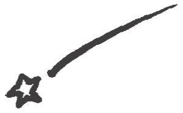
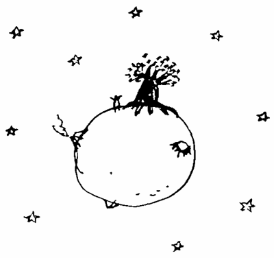
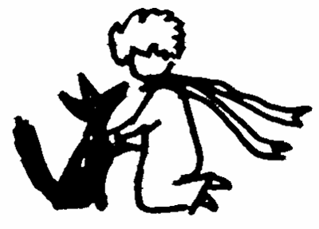
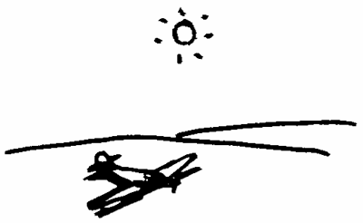
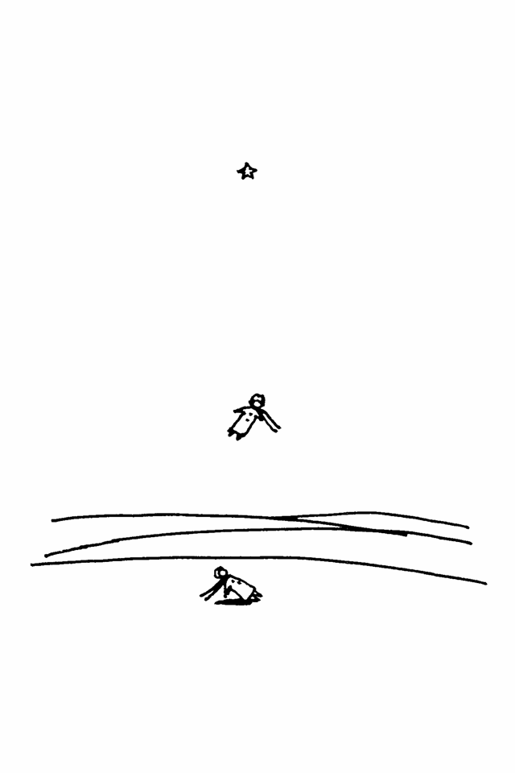

| 【大活字シリーズ】星の王子さま | |
| サン=テグジュペリ | |
LE PETIT PRINCE
by Antoine de Saint-Exupéry
星の王子さま
著・サン＝テグジュペリ
訳・浅岡夢二 絵・葉祥明

この本をレオン・ウェルトに捧げます
ぼくは、この本を大人の人に捧げたことで、
子どもたちに謝らなければなりません。
でも、それにはちゃんとした理由があったのです。
まず、一つ目の理由は、
その人が、ぼくの一番の親友だったということです。
また、二つ目の理由もありました。
それは、彼が、たとえ子どものための本でも、
きちんと理解できる大人だったということです。
さらに、三つ目の理由もありました。
それは、彼が、いま（戦争中の）フランスに住んでいて、
飢えと寒さに苦しんでいるということです。
彼には、なぐさめが必要だったのです。
もし、以上の三つの理由でも不充分だというのなら、
ぼくは、彼の中に住んでいるインナー・チャイルドに
この本を捧げたいと思います。
どんな大人の中にも、
インナー・チャイルドが住んでいるものです
（もっとも、そのことを自覚している人は本当に少ないのですが）。
そこで、ぼくは、献辞を次のように書き直そうと思います。
この本をレオン・ウォルトのインナー・チャイルドに捧げます
Le Petit Prince
Antoine de Saint-Exupéry
1943
『星の王子さま』（"Le Petit Prince"）は1953年岩波少年文庫として刊行されました。
タイトルは訳者の内藤濯氏の創案によるものです。内藤氏に敬意を表します。
１
六歳のとき、ぼくは、『本当の話』というタイトルの、熱帯雨林に関する本の中で、とても素敵な絵を見たことがありました。
それは、大きなヘビが、一匹の動物を呑 み込もうとしているところでした。
ここにその絵の写しを掲 げておきましょう。
その絵の下には、次のように書かれていました。
「熱帯にいるボアというヘビは、動物をまるごと呑み込んでしまいます。それで動けなくなったボアは、そのあと、六ヶ月かけて、その動物をゆっくりと消化します。」
そこで、ぼくは、ジャングルを探検している自分の姿を想像してみました。
すると、すごくわくわくしました。
それから、色鉛筆を使って、絵を描きました。ぼくが描いた絵の第一号です。それは、こんな絵でした。
ぼくはその絵を大人たちに見せて、こうたずねました。
「ねえ、すごく恐いでしょ？」
すると、大人たちはこう答えました。
「どうして帽子が恐いんだい？」
ぼくが描いた絵は、帽子ではありませんでした。
それは、象を消化している大ヘビだったのです。
そこで、ぼくは、大ヘビの中が透けて見える絵を描きました。
大人っていうのは、真実を見抜くことができないからです。
ぼくの絵の第二号は、こんなふうな絵でした。
その絵を見た大人たちは僕にこんなことを言いました。
「そういうくだらない絵なんか描いていないで、地理や、歴史や、算数や、国語を勉強したほうがいいよ」
そこで、ぼくは、六歳のときに、画家になる夢を捨ててしまいました。初めて描いた絵を、大人たちにさんざんけなされたからです。
大人たちは頭が固いので、事実をありのままに見ることができません。そんな大人たちに、いつもいつも教えてあげなければならないので、子どもたちはやがてうんざりしてしまうのです。
そんなわけで、ぼくは画家になるのをあきらめて、飛行機のパイロットになりました。そして、世界中の空を飛んだのですが、そのとき、まさに地理が役に立ったのです。ぼくは、一目で、自分がどこを飛んでいるかわかりました。それは、パイロットにとって非常な強みです。
ぼくは、これまでの人生で、とっても多くの、とっても頭の固い大人たちに会ってきました。そんな大人たちのあいだで生きてきたのです。すぐ近くから彼らを観察してきました。そして、いまでも、
"やっぱり大人たちはわかっていない"
と思っています。
ときどき、この人ならわかるかもしれない、と思うことがあります。
そんなときは、いつも、第一号の絵を見せることにしていました。
ものごとの本質が見えるかどうかを試してみたのです。
でも、答えはいつもこうでした。
「帽子がどうかしたの？」
ぼくはがっかりして、熱帯雨林のことや、大ヘビのことや、星のことを話すのをやめました。そして、ゴルフのことや、政治のことや、お金のことを話したのです。
そうすると、相手の人は、ぼくをまともな大人だと思って安心するのでした。
２
そんなふうにして、ぼくは、一人きりで淋しく生きていました。
ところが、ある日を境にして、ぼくの人生は大きく変わったのです。それは六年前のことでした。サハラ砂漠の上空を飛んでいたとき、飛行機のエンジンが故障して、ぼくはサハラ砂漠に不 時 着 したのです。
たった一人で飛んでいたので、乗客も、エンジニアも、誰もいませんでした。ですから、自分一人で飛行機を修理して、なんとか砂漠から脱出しなければならなかったのです。
ぼくは、生きるか死ぬかの瀬 戸 際 にいました。一週間分の飲み水さえ充分にありませんでした。
最初の夜、ぼくは、人々が住んでいる場所から遠く遠く離れた砂の上に、たった一人で寝ました。海の真ん中で遭難した人より、もっともっと孤立していました。
ですから、明け方に、それまで聞いたことのない不思議な声で起こされたとき、ぼくがどれほど驚いたかわかってもらえるでしょう。
――ねえ......。ヒツジを描いてくれない？
「えっ!?」
――ヒツジを描いてほしいの......。
ぼくはびっくりして飛び起きました。まるで雷に打たれたような気がしました。
目をこすって見てみると、不 思 議 な格好をした男の子が、ぼくをしげしげと眺 めていました。
このページに、ぼくが描いたいちばん上手な絵をあげておきます。でも、絵よりも本物のほうがずっと素敵だということは、読者のみなさんはよくわかっているでしょう。だって、ぼくは六歳のときに絵を描くのをやめてしまったのですから。
ぼくは、突然出現したその子を、目を丸くして見つめました。
そのとき、ぼくが、砂漠の真ん中にいたことを思い出してください。
その子は、迷っているようにも、喉 が渇 いているようにも、おなかをすかせているようにも見えませんでした。また、疲れているようにも、不安になっているようにも見えませんでした。
つまり、広い広い砂漠の真ん中で、迷子になった子どものようには見えなかった、ということです。
ぼくはようやく我に帰り、その子にこう聞きました。
「だけど、こんなところで何をしているんだい？」
その子は、さっきと同じ言葉を、まるでとても大切なことのようにくり返しました。
――ねえ......。ヒツジを描いてくれない？
不 思 議 なことも度を越すと、さからうことができなくなります。
ぼくは、心の片隅で、そうとう馬 鹿 なことをしているぞと考えながら、ポケットからペンと紙を取り出しました。
でも、そのとき、ぼくは、自分が絵を描く練習をしてこなかったことを思い出しました。地理や、歴史や、算数や、国語しか勉強してこなかったのです。
そこで、その子に向かって、ちょっと不機嫌に、
「ぼくは、絵を描くのが下手なんだ」
と言いました。
すると、その子はこう言いました。
――下手でもいいから、ヒツジの絵を描いてよ。
ぼくは、それまで一度もヒツジの絵を描いたことがなかったので、どうやって描けばいいのかわかりませんでした。
そこで、代わりに、例の大ヘビの絵を描きました。ぼくが人生でいちばん最初に描いた絵です。
すると、それを見て、その子はこう答えました。それを聞いて、僕は、腰を抜かすほどびっくりしました。
――そんな絵がほしいんじゃない！ 象を呑んだヘビの絵なんかほしくない。
ヘビは危険だし、象は大きすぎるから。
ボクのところはとても小さいんだ。
それに、ボクにはヒツジが必要なの。
だから、ヒツジを描いて。
そこで、ぼくはヒツジを描きました。
それを見て、その子はこう言いました。
――そんな病気のやつなんかいやだ。
もっと元気なのを描いてよ。
そこで、ぼくは別の絵を描きました。
すると、その子はやさしく微笑んで、次のように言いました。
――よく見てごらんよ......。
これはヒツジじゃない、ヤギだよ。
角があるじゃないか。
そこで、ぼくはまた描き直しました。
でも、それもその子の気に入りませんでした。
――このヒツジは、歳を取りすぎているよ。そんなんだとすぐに死んじゃうでしょ。もっと長生きするやつを描いて。
ぼくは、飛行機を修理しなければならないことを思い出し、だんだんイライラしてきました。
そこで、次の絵を描いて、それをその子に渡しました。
「ほら、これならいいかい？ その箱の中に、君がほしがっているヒツジが入っているよ」
すると、驚いたことに、その子は、突然、顔を輝かせました。

――やった～！ こんなのがほしかったんだ。
ねえ、このヒツジは、草をたくさん食べるの？
「どうしてそんなことを聞くんだい？」
――だって、ボクんとこは、とっても小さいんだもの......。
「大丈夫だよ。すごく小さいヒツジだから」
その子は、穴から中を覗 き込むと、こう言いました。
――そんなに小さくないじゃない......。
あ、寝ちゃったよ、このヒツジ。
こんなふうにして、ぼくは星の王子さまと知り合ったのです。
３
星の王子さまがどこからやって来たのかがわかるまで、だいぶ時間がかかりました。
彼は、ぼくに対してはたくさん質問をするくせに、ぼくからの質問には、ぜんぜん答えてくれなかったからです。
彼がたまたま言ったことをつなぎ合わせることによって、だんだんいろいろなことがわかってきたのです。
たとえば彼は、ぼくの飛行機をはじめて見たとき、こう言いました。
――これなあに？
「ああ、これかい。これは飛行機だよ。これに乗って飛ぶんだ」
ぼくは、誇らしげにそう言いました。
すると、星の王子さまはこう答えました。
――それじゃあ、キミは空から落ちてきたの？
「そうだよ」
――へぇ～。そうなんだ。
そう言って、彼はけらけらと笑いました。
ぼくはちょっと気分を害しました。
人の不幸をそんなふうに、不真面目に受け取るべきではないと思ったのです。
星の王子さまはさらにこう言いました。
――じゃあ、キミも空からやって来たんだね。どの星から来たの？
それを聞いて、その子の不 思 議 な雰 囲 気 が、少し理解できたような気がしました。
「ということは、君は他の星から来たってことかい？」
星の王子さまはぼくの質問には答えませんでした。いつだってそうなのです。
その代わり、彼は、ひとりでうなずきながら、ぼくの飛行機を見て言いました。
――そうだね、こんなんじゃ、そんなに遠くからは来られないよね。
そう言うと、星の王子さまはしばらく物思いにふけっていました。
それから、例のヒツジの絵を取り出すと、それをいつまでも大事そうに眺めていました。
王子さまが、他の星のことをちょっと口にしたので、ぼくはそのことが気になって仕方ありませんでした。
そこで、その星についてもっと知るために、質問をしてみました。
「ねえ、君はどこから来たんだっけ？〈ボクんとこ〉ってどこなの？ そのヒツジをどこに連れて行くつもりなんだい？」
王子さまは、しばらく考えてからこう言いました。
――キミが箱を描いてくれたので、とってもうれしいよ。だって、夜になれば、ヒツジはその中で寝られるからね。
「それはそうだね......。
ねえ、質問に答えてくれたら、昼のあいだヒツジをつないでおくヒモを描いてあげるけど......。それと杭も」
星の王子さまはそれを聞いてショックを受けたようでした。
――ヒツジをつなぐだって？ 変なこと言わないでよ！
「だって、つながなかったら、どっかにいっちゃうじゃないか」
星の王子さまは、また、けらけらと笑いました。
――どこに行くと思っているの？
「どこって......。とにかくどこかに行っちゃうだろ？」
すると、星の王子さまは、突然、真 面 目 な顔をしてこう言いました。
――だいじょうぶ。ボクんとこはすごく小さいんだから！
それから、少し悲しそうにこう言いました。
――ちょっとでもまっすぐ歩いたら、すぐもとの場所に戻っちゃうんだ。
４
ぼくは二番目のとても大事なことを知ったのです。
つまり、彼の星は、普通の家くらいの大きさしかない（！）、ということだったのです。
でも、それほど驚きませんでした。
というのも、地球や、木星、火星、金星といった大きな星の他に、宇宙には、望 遠 鏡 を使ってもなかなか見えない小さな星が、無数と言えるほどあることを知っていたからです。
天文学者がそんな星を発見すると、ちゃんとした名前をつけずに番号で呼びます。たとえば、〈小遊星３２５ Ｉ〉というふうに。
星の王子さまは、きっと、〈小遊星Ｂ６１２〉から来たのだと思います。
この小遊星は、一九〇九年に、トルコの天文学者によって発見されました。
そして、その天文学者は、天文学の国際会議において、この星のことを発表しました。でも、そのとき、彼はトルコの変な服を着ていたので、だれも彼の言うことを信じませんでした。
大人はいつだってそんなものです。
ところが、その後、トルコの王様が、国民全員に、ヨーロッパ人のような洋服を着るように命令したのです。もし、命令に従わない場合は、死刑にする、ということでした。
例の天文学者は、一九二〇年に、ヨーロッパ風のスーツを着て、もう一度発表しました。今度は、みんながその発表を認めました。
ぼくがいまここで〈小遊星Ｂ６１２〉のことを詳しく語り、６１２という数字まで出したのは、大人たちのためです。大人たちは、数字を見れば安心するからです。
たとえば、あなたが、大人たちに、新しくできた友だちのことを話そうとすれば、大人たちは、本質的なことについては何も質問しないでしょう。つまり、次のような質問は絶対にしないのです。
「どんな声をしているんですか？」
「どういう遊びが好きなんですか？」
「蝶 々 は集めていますか？」
その代わりに、こんな質問をするでしょう。
「何歳ですか？」
「きょうだいは何人いますか？」
「体重は何キロですか？」
「お父さんの年収はいくらですか？」
そして、それらの数字を知れば、友だちを知ったことになると思っているのです。
もしあなたが大人たちに対して、
「バラ色のレンガでできた、とても美しい家を見ました。窓にはゼラニウムの花が飾ってあり、屋根には鳩がとまっていました」
と言っても、大人たちはそれがどんな家なのかまったく見当もつきません。
その代わりに、あなたがこう言ったとしましょう。
「一億二千万円の家を見ましたよ」
すると、彼らはこう言うでしょう。
「それはさぞかし素晴らしい家だったでしょう！」
同様に、あなたが、星の王子さまのことをこんなふうに言ったとしましょう。
「星の王子さまがいるという証 拠 は、星の王子さまがとても素敵だったということです。星の王子さまは、よく笑い、そしてヒツジをほしがりました。ヒツジをほしがる、ということは、星の王子さまが存在したという証拠ですよね」
すると、大人たちは、肩をすくめ、あなたを子ども扱いするに違いありません。
でも、あなたがこう言ったとしましょう。
「星の王子さまは、小遊星Ｂ６１２から来たんですよ」
すると、大人たちは、なるほど、というふうに、したり顔でうなずくのです。あなたを質問攻めにすることはないでしょう。
大人って、そんなものなのです。大切なことは何もわかっていません。だから、大人を悪く思わないようにしましょう。
でも、ぼくたちは、ちゃんと人生のことがわかっているので、数字なんか問題にしません。
できれば、ぼくは、このお話を、妖 精 物語みたいに始めたかったのです。たとえば、次のように。
「むかし、むかし、大宇宙の彼方の小さな星に、一人の男の子が住んでいました。その星は、男の子よりもほんのちょっと大きいだけでした。だから、その子は、友だちがほしかったのです」
人生とは何かがわかっている人たちには、このほうがずっと真実らしく聞こえたことでしょう。
ぼくは、このお話を軽々しく読んでほしくないのです。
ぼくは、こんなふうに星の王子さまのことを書くのが、本当はとてもつらいのです。
星の王子さまは、六年前に、ヒツジといっしょに自分の星に帰ってしまいました。ぼくがこのお話を書いているのは、彼のことを忘れたくないからです。友だちのことを忘れるって、とっても悲しいことでしょう？
誰でも本当の友だちを持てるわけではありません。それに、ぼくだって、そのうち、数字にしか興味のない大人になってしまうかもしれません。
だから、ぼくは鉛筆と絵具を買って、いま、こうしてお話と挿 絵 を描いているのです。
六歳のときに、ヘビの絵を二枚だけ描き、それ以来一度も絵を描いたことのない人間が、この歳になって本の挿絵を描くのはとても大変です。
もちろん、ぼくは、なるべく星の王子さまに似た絵を描きたいと思っています。でも、うまくいくかどうかまったく自信がありません。
ある絵は似ていても、他の絵は似ていないでしょう。体の大きさも適切とは言えません。ある絵では、星の王子さまが大きすぎ、別の絵では、星の王子さまが小さすぎるかもしれないのです。
また、洋服の色についても不安が残ります。
それでも、とにかく、できる範囲で、一 生 懸 命 描いてみるつもりです。
決定的な間違いをする可能性もありますが、もしそうなったとしても大目に見てください。なにしろ、星の王子さまは、決して充分な説明をしてくれなかったのですから。
ぼくのことを、自分と同じ種類の人間だと思っていたみたいなのです。
でも、残念ながら、ぼくは、紙に描いた箱の穴をのぞいて、ヒツジを見ることのできる人間ではありません。
ぼくも、大人にかなり近い人間だったのでしょう。もうだいぶ歳を取っていましたから。
５
王子さまが住んでいた星のこと、星から出発したいきさつ、そしてその後の旅行について、ぼくは、毎日、少しずつ知っていきました。会話の自然な流れから、そうしたことを本当にゆっくりと知っていったのです。
そんなふうにして、三日目に、王子さまは、バオバブの木のことを話してくれました。
そのときも、ヒツジの話がきっかけになりました。
王子さまは、突然、不安な様子でぼくにこう聞いたのです。
――ねえ、ヒツジが小さな木を食べるってほんとう？
「本当だよ」
――そうか、それはよかった。
ヒツジが小さな木を食べることが、どうしてそれほど大切なのか、ぼくにはさっぱりわかりませんでした。
でも、その後で、王子さまはこう質問したのです。
――だったら、バオバブも食べるよね？
そこで、ぼくはこう言いました。
「バオバブは小さな木じゃないよ。教会みたいに大きいんだ。だから、バオバブを食べさせたいのなら、君の星に象をたくさん連れて行かなくちゃ」
それを聞いた王子さまは、すごく楽しそうに笑いました。
――だったら、象の上に象を乗せなくちゃいけないね。
そう言ってから、こんな鋭 い言葉をつけ加えました。
――バオバブだって、大きくなる前は、小さな木なんだよ。
「なるほど！ だけど、どうしてヒツジに小さなバオバブを食べさせたいの？」
すると、王子さまはこう答えました。
――だって、そんなこと当たり前じゃない！
王子さまは、まるで当然のことのように言いました。
でも、ぼくにはよくわかりませんでした。そこで、一生懸命考えた結果、ようやく次のことがわかったのです。
つまり、王子さまの星には、他の星と同じように、良い植物と、悪い植物があるのです。ということは、良い植物の種と、悪い植物の種があるということです。
でも、種は小さいので、なかなか見つけることができません。土の中でじっとしていて、そのうち、ある日、そろそろ芽を出そうかと思うわけです。
そうして、伸びをひとつして、最初はおずおずと、太陽に向かって、かわいらしい芽を出すのです。
もし、それが、大根の芽だったり、バラの芽だったりしたら、そのまま放っておけばいいでしょう。
でも、もし、それが、悪い植物の芽だったら、そうとわかった時点で、すぐに摘まなければなりません。
ところで、王子さまの星には、すごく危険な種があったのです......。
それが、バオバブの種でした。
王子さまの星の地面には、バオバブの種がたくさんひそんでいたのです。
もし、小さいうちに芽を摘まなければ、バオバブはあっというまに大きくなって、手がつけられなくなります。それに、根っこもどんどん伸びていきます。
もし、小さい星にバオバブがたくさん生えたら、その星はやがて破壊されてしまうに決まっています。
あとになってから、王子さまはこんなふうに言いました。
――それは、つまり習慣の問題なんだよ。
毎朝、トイレに行って、いらなくなったものを体から出すでしょう。それと同じで、いらないものを星から取りのぞいてやらなくちゃいけないんだ。
バオバブの芽って、バラの芽ととても似ているので、見分けるのがすごく難しいんだけど、とにかく、それがバオバブの芽だとわかったら、すぐに抜かなくちゃいけない。
めんどうくさいけど、やる気になりさえすれば、とっても簡単なんだ。
そして、ある日、王子さまは、僕に、地球の子供たちにきちんと教えるために、バオバブの絵を描いておいたほうがいいと忠告してくれました。
――もし、地球の子供たちが、別の小さな星に行くことになったとしたら、きっとそれは役に立つよ。やるべきことを先延ばしにしても、それほど重大な結果にならないこともある。
だけどバオバブだけは別なんだ。
芽を摘むのを忘れたら、とんでもないことになってしまう。
ボクは、怠 け者 がひとり住む星を知っていたけど、その怠け者は、バオバブを三本そのままにしておいたんだ......。
ぼくは、王子さまの忠告にしたがって、その星の絵を描きました。
ぼくは、別に、したり顔でお説教をするつもりはありません。
でも、バオバブがすごく危険であることはあまり知られていないのです。もし、小さな星に住むことになった人が、バオバブの芽を見逃したとしたら、とんでもないことになってしまうでしょう。
だから、ここでは、遠 慮 するのをやめて、子どもたちにこう言っておきます。

「ねえ、君たち！ バオバブには本当に気をつけるんだよ！」
ぼくがこの絵を一生懸命描いたのは、それと気づかずにずいぶん前から危険な領 域 に突入している地球の人たちに、なんとか気づいてもらいたかったからです。
ぼくが言ったことは、充分考 慮 に値するはずだと思っています。
もしかすると、こんな質問をする人がいるかもしれません。
「どうして、この本の中には、バオバブの絵みたいに立派な絵が他にはないんですか？」
答えは単純です。
ぼくは描こうと思ったのです。でも、どうしても描けませんでした。
バオバブの絵を描いたときは、本当に立派な危 機 感 を持っていたので、その結果、これほど大きな絵になったのでしょう。
６
ああ、星の王子さま！ ぼくは、少しずつ、君のメランコリックな人生のことを理解していったのでした。
長いあいだ、君には、夕日を見ること以外に、気晴らしが何もなかったのです。
ぼくがそのことを知ったのは、四日目の朝でした。
そのとき、君はこう言いました。
――ボクは夕日を見るのが好きなんだ。ねえ、夕日を見に行こうよ......。
「夕日を見るには、待たなくちゃ」
――待つって、何を？
「だから、日が沈むのをさ」
君はとても驚いた顔をしました。
それから、大きな声で笑いました。
――そうか、地球は、ボクの星とは違うんだ！
その通り。
アメリカ合衆国で、いまお昼の十二時だとすれば、日が沈んでいる国はフランスなのです。
したがって、いますぐ夕日を見たいなら、一瞬で、アメリカからフランスまで行かなくてはなりません。
でも、残念ながら、いまの科学技術ではとてもそんなことはできません。
ところが、君の小さな星だったら、椅 子 をちょっと動かすだけで、夕日を見ることができます。
つまり、見たいと思ったときに、いつでも夕日を見ることができるのです。
――ある日なんか、四十三回、夕日を見たことがあるよ！
そして、君は、少したってからこうつけ加えました。
――ねえ、悲しいときって、夕日が見たくなるよね......。
「じゃあ、夕日を四十三回見た日、君は四十三回悲しくなったのかい？」
王子さまは、その質問に答えませんでした。
７
五日目の朝、またまたヒツジにちなんで、王子さまの秘密が明かされました。
王子さまは、突然、前置きもなく、次のように聞いてきました。
――ヒツジって、小さな木を食べるよね？ だったら、花も食べるの？
「ヒツジは、目の前にあるものは何だって食べるさ」
――とげのある花も？
「もちろん、とげのある花も食べる」
――だったら、とげは何の役に立つの？
ぼくには、そんなことはわかりませんでした。
そのとき、ぼくは、なかなかゆるまないエンジンのねじを、なんとかして取り外そうとしていたのです。
ものすごく不安でした。なぜなら、故 障 が簡単には直りそうもなかったからです。それに、飲み水もなくなりかけていました。
――ねえ、とげは、何の役に立つの？
王子さまは、いちど質問すると、答が得られるまで絶対にあきらめません。
ぼくは、ねじがゆるまないのでイライラしていました。そこで、口から出まかせを言いました。
「とげなんて、何の役にも立ちやしないさ。バラが意 地 悪 だから、とげなんかつけてるんだ！」
――えっ！ ほんとなの？
そのあと、しばらく沈黙がありました。それから、王子さまはぼくをなじるようにこう言いました。
――ボクはそんなこと信じないぞ！
バラの花は、弱いし、何も知らないんだ。なんとかして自分を守ろうとしている。
とげをつけていれば、みんなが恐がると思っているんだ......。
ぼくは返事をしませんでした。こんなふうに考えていたからです。
"もし、これ以上やってもねじがゆるまないなら、ハンマーで叩 き壊 してやろう！"
王子さまは、ふたたび、ぼくの考えを邪魔しました。
――ねえ、もしかしてキミは......。
「うるさいなあ！
どうでもいいようなことを聞かないでくれ。
ぼくは、いま忙しいんだ！」
王子さまは、口をあんぐり開けてぼくを見ました。
――忙しいだって？
そのとき、ぼくは、汚れた油で黒くなった手にハンマーを握り、変な形をしたエンジンの上にかがみこんでいました。
――大人みたいなこと言わないでよ！
ぼくは、それを聞いて急に恥ずかしくなりました。
王子さまは、さらに続けて言いました。
――キミは......、なんでもいっしょくたにしてしまうんだ！
ひどく怒っているようでした。金色の美しい髪の毛が震えていました。
――ボクは、赤ら顔のおじさんが住んでいる星を知っている。
そのおじさんは、花の香りをかいだことなんかいちどもない。星を見たことだっていちどもない。人を愛したことだっていちどもない。
いつも、いつも、計算ばかりしているんだ。
そして、一日中、キミみたいにくり返している。
「ああ、忙しい！ ああ、忙しい！」
そうして、自分を偉いと思っているんだ。
そんなの人間じゃない。
まるでキノコじゃないか！
「何だって？」
――キノコだよ！
王子さまは、怒りのあまり、青ざめていました。
――何百万年も前から、バラの花はとげをつけてきたんだ。
それなのに、何百万年も前から、ヒツジは花を食べてきた。
そんなふうに何の役にも立たないとげを、どうしてバラがずっとつけてきたのか、その理由を知ろうとすることが、それほど大切なことじゃないって言うの !?
ヒツジとバラがやってきた戦いに意味がないって言うの？
そんなことよりも、赤ら顔のおじさんの計算のほうが大事だって言うの？
ボクの小さな星に、バラの木があって、宇宙でたったひとつの花を咲かせたのに、それをヒツジが食べてしまうんだ。
なのに、それが大切なことじゃないって言うの？
王子さまは、今度は真っ赤になり、こう言いました。
――何百万もの星が輝く宇宙のどこかに、たったひとつだけ、キミの愛する花が咲いている星があるんだ。
だったら、そんな無数の星を眺 めるだけで、キミは幸せになるんじゃないの？
「この宇宙のどこかに、ボクの愛する花が咲いているんだ......」
って、そう思うんじゃないの？
でも、もしヒツジがその花を食べちゃったら、ぜんぶの星の光が消えちゃったのと同じことでしょ？
それが、大事なことじゃないって言うの？
王子さまは、声を詰まらせ、もうそれ以上、何も言えなくなりました。
そして、突然、泣き始めたのです。
すでに日が暮れていました。
ぼくの手には、もう、工具はありませんでした。
ハンマーも、ねじも、喉 の渇 きも、自分の死さえも、もうどうでもよいと思われました。
大宇宙にぽっかりと浮かぶ地球という星の上で、小さな王子さまが泣いているのです。何よりもまず、その子をなぐさめてあげなければなりません。
ぼくは、王子さまを抱き、静かにゆすってあげました。
そして、こう言ったのです。
「君の好きな花は、大丈夫だよ......。
ヒツジの口に口輪をはめればいいんだ。口輪を描いてあげよう。
それに、花のために、覆 いを描いてあげよう。
それから...‥」
ぼくは、それ以上、何を言えばいいのかわかりませんでした。
すごく、居心地の悪い思いがしました。
どうやって王子さまの気持ちとつながればいいのか、よくわからなかったのです。
涙というのは、とても神 秘 的 なものです。
８
やがて、ぼくは、そのバラのことをもっとよく知るようになりました。
ところで、王子さまの星には、ずっと前から、一重の花びらを持つ、とても単純な花が咲いていました。それは、ほとんど場所を取らず、また、誰の邪 魔 にもなりませんでした。
その花は、朝に開いては、夕方にしぼむのでした。
でも、ある日、どこから飛んで来たのかわからない種から、バラの芽が出たのです。王子さまは、その芽を、とても注意深く眺 めました。
もしかすると、バオバブの新しい芽かもしれないと思ったからです。
でも、その木は、すぐに大きくなるのをやめて、花を咲かせる準 備 を始めました。
王子さまは、つぼみがどんどん大きくなるのを見て、きっと素 敵 な花が咲くのだろうなと思いました。心がすごくわくわくしてきました。
でも、緑色のつぼみの中で、花はいつまでも、いつまでも、きれいになる準備をしているようでした。注意深く色を選んでいるに違いありません。
ゆっくりと美しい色をまとい、花びらを一枚一枚整 えているのでしょう。きっと、ひなげしが咲くときのような、しわだらけの姿を見られるのがいやだったのだと思います。
咲くからには、これ以上はないと思われる、美しく輝く姿を見せたかったのでしょう。
そうです。この花は、とってもおしゃれだったのでしょう！
ですから、身 支 度 に、何日も何日もかけたのです。
やがて、ついにある朝、朝日が出るのと同時に花を咲かせました。
そして、あくびをしながらこう言いました。
「ああ、まだちゃんと目が覚めていないみたい......。ごめんなさい......、身支度がきちんとすんでいなくて......」
王子さまは思わずこう言いました。
――なんてきれいなんだろう！
「そうかしら？」
と、花が流し目をしながら答えました。
「私は、お日さまといっしょに生まれたのね......」
王子さまは、その花が、あまり慎み深くないように感じました。でも、一方で、ものすごく感動していました。
花は、すぐにこうつけ加えました。
「そろそろ朝ごはんの時間ね。ねえ、私のことを考えてくれているかしら？」
それを聞いて、王子さまはちょっと当惑しましたが、それでも新鮮な水の入ったジョウロを探しに行き、花に水をかけてあげました。
こうして、花は、ちょっと気むずかしい虚 栄 心 で、王子さまを振り回し始めたのです。
たとえば、ある日、身につけている四本のとげに関して、花は王子さまにこう言いました。
「トラがやってきて、爪で私をひっかいたらどうしようかしら？」
――この星にはトラはいないよ。それに、トラは草なんか食べないさ。
「私は草じゃないわ」
と、花はなじるように言いました。
――ご、ごめん......。
「トラなんか、ちっとも恐くないわ、それよりも、風のほうが心配なの。この星には、ついたてはないの？」
"風のことを心配するなんて......、ずいぶん変わったバラだなあ。なんてややこしいバラなんだろう......。"
王子さまはこんなふうに思いました。
「夜になったら、ドーム型のガラスで覆 ってほしいわ。だって、この星は、とても寒いんだもの。だいたい設備が悪いのよ。私がもといた星なんか......」
でも、バラはそこで口ごもってしまいました。
それまでずっと種だったので、目が見えず、ほかの世界のことは何ひとつ知らなかったのです。
やりこめられた形になったバラは、そこで、二、三回咳 をしました。
落ち度は王子さまにある、ということを暗に示そうとしたのです。
「ついたては見つけたの？」
――うん、探そうと思ったんだ。だけど 君が話をしているから......。
バラは、また、わざと咳をしました。王子さまに罪 悪 感 を与えようとしたのです。
善意から、バラのために何かしてあげたい、と思っていた王子さまは、それを見て、すっかり混乱してしまいました。
バラの言葉にひそんでいるとげに傷つけられて、すっかり落ち込んでしまったのです。
――バラの言葉なんか聞くべきじゃなかったんだ。
と、ある日、王子さまはぼくに言いました。
――花の言うことなんか聞いちゃあだめなんだ。花は、眺 めて、香りをかいでいるだけでいいんだよ。
あのバラの花は、ボクの星をすごくいい香りで満たしてくれた。
だけど ボクには、それを楽しむ余裕がなかった。
トラの爪のことだって、あんなふうに大げさに受け取って、傷つく必要なんてなかったんだ。軽く聞き流しておくべきだった。そうすれば、もっと優しい気持ちになれたかもしれない......」
王子さまは、さらに続けてこう言いました。
――ボクは何一つ大切なことを学ばなかった......。
バラの言葉ではなくて、バラの行動に基づいて判断すべきだったんだ。
バラは、素敵な香りでボクを満たし、ボクの心を明るくしてくれた......。
ボクは、逃げ出すべきじゃあなかったんだ！
意 地 悪 な言葉の背後には、バラの優しさがかくされていた。そのことに、ボクは気づかなくちゃいけなかったんだ。
バラの花って、矛 盾 した存在なんだね！
だけどボクは幼かったので、そんな花を愛することができなかった。
９
王子さまは、星から逃げだすのに、野生の鳥たちの渡りを利用したと思います。
出発の朝、王子さまは、星の上をきれいに片づけました。
注意深く活火山の掃 除 をしました。星には、活火山が二つあったのです。王子さまは、ふだん、その二つの活火山を使って朝食を温めていました。
休火山もひとつありました。でも、いつ活火山になるかわかりません。そこで、その休火山も注意深く掃除しました。
そうやって掃除をしておけば、いきなり激しく爆発せず、ゆっくりと規則的に燃えるでしょう。
王子さまの星では、火山の掃除は、暖 炉 の掃除みたいなものです。
火山がとても小さいからです。
でも、地球では、火山が大きすぎるので、掃除をすることは不可能です。だから、火山はぼくたちをあれほど困らせるわけです。
王子さまは、ちょっぴり物悲しい気分になりながら、最近出たバオバブの芽をいくつか摘みました。たぶん、この星にはもう帰れないだろうと思ったからです。
そんなふうに、いつもと同じ仕事をしながら、少しずつ、王子さまは優しい気持ちになっていきました。
そして、バラの花に最後の水をやり、ガラスの器をかぶせようとした時、思わず泣きそうになってしまいました。
――さようなら。
と、王子さまは言いました。
でも、バラの花は答えません。
――さようなら。
王子さまはもう一度言いました。
バラの花は咳 をしました。
でも、それは風 邪 を引いていたからではありません。
「私が馬鹿だったのよ」
花がとうとう言いました。
「ごめんなさい。どうか幸せになってね」
王子さまは、バラの花の言葉にとげがないことに驚きました。
面 食 らった王子さまは、ガラスの器を持ったまま、そこに立っていました。
「そうよ、私はあなたを愛していたの」
花が言いました。
「でも、あなたはそれをまったく知らなかった。私のせいね。
今となっては、もうそんなことはどうでもいいわ。
だけど、あなただって私と同じくらい馬鹿だったのよ。
幸せになってね......。
ガラスの器はそこに置いて。もういいの」
――でも、風が......。
「別に風邪を引くわけじゃないし......。
夜になって涼しい風が吹けば、とっても元気になるわ。
私は花だもの」
――虫は？......
「毛虫の二、三匹、どうってことないわ。
そのうち蝶 になるでしょう。
蝶になれば、きっと、すごくきれいよ。
それに、蝶がいなければ、私は一人きり......。
あなたは、とても遠いところに行ってしまうのだから。
大きい動物については何も心配しないで。私にはとげがあるもの」
そう言って、バラの花は、無 邪 気 な様子で四つのとげを見せました。
それから、急にきつい口調でこう言いました。
「どうしていつまでもぐずぐずしているのよ？ 行くことにしたんでしょ！ だったら、さっさと行きなさいよ！」
バラの花は、自分が泣くところを王子さまに見られたくなかったのでしょう。
本当にプライドの高いバラでした......。
１０
王子さまの星の近くには、小遊星３２５、３２６、３２７、３２８、３２９そして３３０がありました。
そこで、王子さまは、まずそれらの星を訪れて、何か自分にできることをしながら、いろいろと学んでみたいと思いました。
最初の星には、〈王様〉が住んでいました。
王様は、純白のマントの上に、緋 色 の肩掛けをはおっていました。
そして、簡素ではあるけれど威厳に満ちた玉 座 にすわっていました。
「おう、家来が来たな」
と、王子さまを見た王様が叫びました。
王子さまは、こう考えました。
"ボクをはじめて見たのに、どうしてボクが家来だってわかるんだろう？"
王様にとって、自分以外の人間はすべて家来に見える、ということが王子さまにはわからなかったのです。
「もっと近くに寄るがよい」
家来が見つかったので、王様はうれしくて仕方がありません。
王子さまは、すわる場所を探しましたが、その小さな星は、純白のマントですっかり覆われてしまっており、すわる場所がありません。
そこで、立ったままでいました。でも、疲れていたので、思わずあくびをしてしまいました。
「こら、わしの目の前であくびをするとは何事じゃ！」
と、王様は大きな声で言いました。
「わしは、お前があくびをするのを禁じる」
――ごめんなさい。わざとしたんじゃないんです。
と、星の王子さまは申しわけなさそうに答えました。
――長い旅をしてきて、あんまり寝ていないんです......。
「そうか、それなら、お前に、あくびをするように命じよう。ここ数年、わしは人があくびをするのを見たことがないからのう。
わしは、あくびに興味がある。さあ、あくびをしてみよ。これは命令じゃ！」
――そんなふうに言われても......。もう出ません......。
王子さまは、恥ずかしそうに顔を赤らめながら言いました。
「ふむ、そうか。それならば、時にはあくびをして、時には......」
王様はそこで言いよどみました。気分を害したようでした。
というのも、王様は、自分の権 威 が認められないと、王様ではいられないからです。ですから、命令に従わないということが許せないのです。
この王様は、絶対君主でした。でも、一方ではものすごく善良だったので、無理な命令は出さなかったのです。
「もしも、じゃ」
と、王様は言いました。
「もしも、わしが、将軍に向かって、カモメになれ、と命令したとしよう。そして、将軍が、その命令に従わなかったとしたら、それは、将軍が悪いのではなく、わしの命令が間違っていたことになる」
――すわってもいいですか？
と、王子さまはおずおずとたずねました。
「わしは、お前に、すわるように命令する」
王様は、もったいぶって純白のマントのすそをひっぱり、場所を少し空けてくれました。
でも、そのとき、王子さまはびっくりしてしまいました。星がとても小さいことがわかったからです。こんな小さな星の、いったいどこを統 治 するというのでしょうか？
――王様......、質問していいですか？
「わしは、お前に質問するように命ずる」
と、王様は急いで言いました。
――王様は、どこを統治するのですか？
「すべてじゃ」
と、王様は、とても簡 潔 に答えました。
――すべてって？
王様は、控え目な態度で、自分の遊星、他の惑星、そして他の星々を指し示しました。
――全部なのですか？
「あの星たちを全部じゃ......」
ということは、この遊星の絶対君主であるだけでなく、宇宙全体の絶対君主でもある、ということになります。
――じゃあ、星たちも、王様のいうことを聞くのですか？
「もちろんじゃ。星たちは、わしの言うことをすぐに聞く。わしは不 服 従 を許さん」
王様がそんなにすごい権力を持っていることを知って、星の王子さまはすっかり驚いてしまいました。
だとすると、王様は、まったく椅子を動かすこともなく、一日に、四十四回でも、七十二回でも、百回でも、いや二百回でも、夕日を見ることができるわけです。
王子さまは、残してきた自分の星のことを考えて、ちょっと悲しかったので、思いきって王様に頼んでみました。
――王様、ボクは夕日が見たいんですけど......。夕日を見せていただけませんか......。太陽に沈むように命令してください。
「もし、わしが、将軍に、花から花へと飛び回る蝶 になれと命令したとしよう。あるいは、悲劇を書けとか、カモメになれとか命令したとしよう。
そのとき、もし将軍が、その命令を実行しなかったとしたら、悪いのは、将軍だろうか？ あるいは、わしだろうか？」
――王様です。
王子さまはきっぱりと言いました。
「その通りじゃ。できぬことを求めるべきではない。権 威 というのは、理 性 的 に行使されねばならぬのじゃ。
もし、わしが、国民に向かって、みんな海に飛び込め、と言ったら、彼らはきっと反乱を起こすだろう。
わしが命令できるのは、命令の内容が合理的な場合だけなのじゃ」
――夕日のことはどうなったんですか？
王子さまが言いました。王子さまは、自分がした質問のことは、決して忘れないのです。
「夕日か。お前は夕日を見ることができるであろう。わしが命令すればよいのじゃ。
ただし、わしは、科学的に統 治 しておる。したがって、条件が整うまで、命令するのを待つのじゃ」
――いつ条件が整うんですか？
「ちょっと待て」
そう言って、王様は大きな暦 を見ました。
「ふむ、ふむ、ふむ。ええと、ええと、今晩の七時四十分じゃな......。今晩の七時四十分まで待てば、わしの命令は実行されるであろう......」
王子さまはあくびをしました。すぐに夕日が見られないので、がっかりしたのです。王子さまは退屈し始めていました。
――ボクは、ここでは何もやることがありません。ですから、この星から出て行きます。
「待て！」
やっと家来を見つけることができて喜んでいた王様は、ひどくあせって言いました。
「行ってはならん。
そうだ、お前を大臣にしてやろう」
――大臣って、何の大臣ですか？
「そう、法務大臣なんかどうじゃ？」
――だって、裁 判 の対象になる人がいません。
「わからんぞ。わしはまだ、この王国をぜんぶ見ておらん。
わしはずいぶん歳を取っておるし、その上、歩くのがおっくうだと来ておる。四輪馬車に乗ればいいのじゃが、四輪馬車を置く場所がない」
――そういえば......
と言って、王子さまは、その星のもう片方の表面も眺 めてみました。
――こちらのほうにも誰もいませんよ。
「だったら、自分を裁判したらいいんじゃ。
それがもっとも難しいことだからのう。他人を裁くよりも、自分を裁くことのほうがはるかに難しいものじゃ。
もしお前が、きちんと自分を裁くことができたら、そのとき、お前は本当の知恵を持っていることになる」
――自分を裁くことだったら、どこにいてもできます。ですから、この星に住む必要はありません。
「ふむ、ふむ。わしの星のどこかに、歳を取ったネズミがいるはずじゃ。夜になると、何やらがさごそ音が聞こえるからのう。そのネズミを裁くこともできるぞ。
場合によっては、死刑に処してもよい。つまり、お前は、ネズミの命を好きなようにできるというわけだ。
そして、そのつど、恩 赦 を与えてネズミの命を救うこともできる。
何しろ、一匹しかいないのだから、殺してしまってはもったいないからのう」
――ボクは、ネズミを死刑にするのはいやです。
そろそろ、この星を離れる時期だと思います。
「いや、それはいかん」
でも、王子さまは、もうすっかり出発の準備をすませていました。
これ以上年老いた王様を苦しめたくなかったのです。
――王様の命令がしっかり守られるためには、王様は、理性的な命令をしなくちゃいけません。
ですから、たとえば、ボクに、いますぐ出発するように命令してください。条件は整ったと思います。
王様は何も言いません。
王子さまはちょっとためらいましたが、ため息をひとつつくと、ついに出発しました。
「わしの大使にしてやるぞ！」
王様は急いで叫びました。
ものすごくえらそうな態度でした。
"大人って、本当にへンだな"
王子さまは、旅を続けながら、そんなふうに考えていました。
１１
二番目の星には、〈うぬぼれや〉が住んでいました。
「やあ、やあ、わたくしのファンがきましたね」
うぬぼれやは、王子さまがやって来るのに気づくと、すぐにこう言いました。
というのも、うぬぼれやにとって、自分以外の人は、全員、自分のファンだからです。
――こんにちは。
と、王子さまは言いました。
――へンな帽子をかぶっているんですね。
「挨 拶 するためにかぶっているんですよ。
わたくしを歓 呼 の声で迎えてくれるファンに、帽子を取って挨拶するためなんです。
ただ、残念なことに、誰もこの星にやって来ませんが」
――そうなんですか？
王子さまには、わけがわかりませんでした。
「とにかく、拍手をしてください」
そこで、王子さまは拍手をしました。
すると、うぬぼれやは、帽子を取って、慇 懃 に挨 拶 しました。
"王様よりは面白いな"
王子さまは、そう考えました。
そこで、もう一度拍手しました。
すると、うぬぼれやは、また、帽子を取って挨拶しました。
五分ほど同じことをくり返すと、王子さまはすっかり馬 鹿 馬 鹿 しくなってしまいました。
――いつまでこんなことをしているんですか？
でも、うぬぼれやは王子さまの言うことを聞いていません。うぬぼれやは、自分をほめる言葉しか聞かないのです。
「君は、わたくしを本当に崇 めているのですか？」
――〈崇める〉ってどういうことですか？
「崇めるというのは、この星に住んでいる人たちの中で、わたくしがもっともハンサムで、もっとも素敵な衣 装 を着て、もっともお金持ちで、もっとも頭がいいと認めることです」
――だって、この星にはあなたしかいませんよ！
「そんなことはどうでもいいのです。とにかくわたくしを崇めることが大切なんです」
――ボクはあなたを崇めます。
王子さまは、ちょっと肩をすくめながらそう言いました。
――でも、こんなことをやってて、いったい、どこが面白いんですか？
王子さまは、その星から出発しました。
"大人って、ほんとに、ほんとにヘンだなあ"
旅を続けながら、
王子さまはこう考えていました。
１２
次の星には、〈酔っ払い〉が住んでいました。
この星には、ほんのわずかな時間しかいませんでしたが、
王子さまはすごくメランコリックになりました。
「あなたはそこで何をしているんですか？」
と、王子さまは、酔っ払いに向かってたずねました。
酔っ払いは、お酒の入ったびんと、空になったびんをたくさん並べた前に、静かにすわっていました。
「酒を飲んでいるんだよ」
酔っ払いは、陰気な顔をして言いました。
――どうしてお酒を飲むんですか？
「忘れるためさ」
――何を忘れるためなんですか？
こう聞いたとき、すでに王子さまは、酔っ払いのことを気の毒に思っていました。
「恥ずかしいと思っていることを忘れるためさ」
こう言って、酔っ払いはがっくり肩を落としました。
――何を恥ずかしいと思っているんですか？
酔っ払いを助けてあげたいと思った王子さまは、こうたずねました。
「酒を飲むことが恥ずかしいのさ」
酔っ払いはこう言うと、完全に自分の中に閉じこもってしまいました。
王子さまは、途 方 にくれてその星から出発しました。
"大人って、ほんとに、ほんとに、へンなんだから"
旅を続けながら、王子さまは考えていました。
１３
四番目の星には、〈ビジネスマン〉が住んでいました。
このビジネスマンはすごく忙しかったので、王子さまが星にやって来ても、顔をあげることさえしませんでした。
――こんにちは。
と、王子さまは言いました。
――たばこが消えてますよ。
「３たす２は５。５たす７は12 。12 たす３は15 。
やあ、こんにちは。
15 たす７は22 。22 たす６は28 。
たばこにまた火をつける時間なんかありゃしない。
26 たす５は31 。
ああ、やっと終わったぞ。
これで、５億１６２万２７３１になった」
――５億って、なにが５億あるんですか？
「うん？ なんだ、まだいたのか？ ５億１００万の......。えーと、えーと、なんだったかな？ 忘れてしまった。
とにかく忙しいんだ。おれは大事な仕事をしている。くだらないおしゃべりなんかするひまはない。
２たす５は７......」
――ねえ、５億１００万って、いったい何が５億１００万もあるんですか？
と、王子さまが聞きました。
王子さまは、一度質問したら、答が返ってくるまで絶対にあきらめないのです。
ビジネスマンは顔を上げました。
「おれはこの星に、54 年前から住んでいるが、そのあいだ、三度、仕事に支 障 を来 した。
一度目のときは、22 年前だった。どこかからコガネムシが飛んできて、大きな音でぶんぶん飛ぶものだから、おれは足し算を四つも間違えてしまった。
二度目のときは、11 年前で、リュウマチの発作が起こったんだ。運動不足だったに違いない。散歩している時間なんかないからな。
とにかくおれは忙しいんだ。
三度目は......。そう、お前のせいだ。５億いくつまで数えていたんだった」
――何が５億なんですか？
ビジネスマンは、その質問に答えないと、王子さまが放っておいてくれないと悟ったようです。
「ときどき、ほら、空に見えるだろ。あれが５億あるって言ってるんだ」
――ハエのこと？
「いや、ちがう。きらきら光る小さなやつさ」
――ミツバチのこと？
「ちがうってば。なまけものに夢を見させる、あの金色の小さなやつさ。もっとも、おれは忙しいので、夢を見ているひまなんかないけどな」
――ああ、そうか。星のことですね。
「その通り。星のことだ」
――５億の星をどうするんですか？
「正確に言わなきゃだめだろ。５億１６２万２７３１個の星だ！
おれは真面目で、かつ厳 密 なんだ」
で、それだけの星をどうするんですか？
「どうするだと？」
――そう。
「何もせん。所有するだけだ」
――星を所有するんですか？
「その通り」
――ボクは、ここに来る前に
王様に会いましたけど......。
「王様なんか何も〈所有〉しとらん。
彼らは〈統 治 〉するだけだ。
その違いは大きいぞ」
――星を所有すると、どんないいことがあるんですか？
「星をたくさん所有していれば、豊かだろうが」
――豊かだと、どんないいことがあるんですか？
「誰かが、別の星を発見したときに、それを買うことができる」
それを聞いて、王子さまはこう考えました。
"この人は、あの酔っ払いと似たような考え方をしているなあ。つまり、堂 々 巡 りなんだ"
でも、王子さまはさらに質問しました。
――どうすれば星を所有することができるんですか？
「星は誰のものだと思う？」
ビジネスマンはつっかかるように聞いてきました。
――知りません。たぶん、誰のものでもないと思います。
「だったら、おれのものだ。なぜなら、おれが最初に所有しようと考えたんだからな」
――本当にそうなんですか？
「もちろんだ。
もし、お前が、誰のものでもないダイヤモンドを見つければ、それはお前のものになるだろう。
もし、お前が、誰のものでもない島を見つければ、それはお前のものになるだろう。
もし、お前が何かを初めて考え出したとしたら、すぐに特 許 を取ればいい。そうすれば、それはお前のものになるだろう。
おれは星を所有しているが、それは、いままで、おれ以外の誰も、星を所有しようと思わなかったからだ」
――確かにそうです。で、星をどうするんですか？
「星を管理するんだよ。何度も数え直すんだ。これは難しいぞ。だけど、おれは、真面目な人間だからな！」
王子さまの気持ちは、まだしっくりきませんでした。
――もし、ボクがマフラーを持っていたら、それを首のまわりに巻いて、どこにでも持っていける。
もし、ボクが花を持っていたら、その花を摘んで、どこにでも持っていける。
でも、星は摘むことができない......。
「摘むことは、確かにできん。だが、銀行に預けることはできる」
――どうすれば？
「紙に星の数を書いて、それを銀行の金庫に入れればいいのだ」
――それだけ？
「そう、それだけだ」
"それは楽しいかもしれない"
と、王子さまは考えました。
"けっこう詩的だ。だけど、そんなに重要なことじゃない"
王子さまは、〈重要〉かどうか、ということに関して、大人たちとはまったく違う考え方をしていました。
王子さまは、さらにこう言いました。
――ボクは、花を持っていて、毎日水をあげている。火山も三つ持っていて、毎週掃 除 をしているんだ。休火山も掃除しているよ。
いつ活火山になるかわからないからね。
そうやってボクは、花や火山のために役立っている。
だけど、キミは、星の役に立っていないね。
ビジネスマンはなんとか反論しようとしましたが、何も言うことができませんでした。
王子さまは、その星から出発しました。
"大人って、何を考えているんだか、ほんとにわからないなあ"
旅を続けながら、王子さまはこう考えていました。
１４
五番目の星は、これまでの星の中でいちばん小さく、またとても不 思 議 な星でした。
そこには、街灯がひとつあって、点 灯 夫 が一人いるだけでした。
王子さまは、家もなく、住民もいない星に、どうして街灯があって、点灯夫がいるのかよくわかりませんでした。いったい、何のためなのでしょう？
でも、こう思いました。
"この人は頭がおかしいのかもしれない。だけど、〈王様〉や、〈うぬぼれや〉や、〈ビジネスマン〉や、〈酔っ払い〉よりはずっとましだ。だって、その仕事にはちゃんと意味があるもの。街 灯 が点 くのは、星がひとつ増えるようなものだし、花が一輪咲くようなものだから。街灯が消えるのは、星や花が眠るようなものかもしれない。街灯を点けるのは、とても素敵な仕事だ。それにとても有 用 な仕事だ。だって、街灯はすごくきれいなんだもの"
王子さまは、その人に敬意を込めて挨 拶 しました。
――おはようございます。どうして街灯を消したんですか？
「規則なんだ。おはよう」
――規則って？
「だから、街灯を消すことが規則なんだよ。こんばんは」
そう言うと、彼はまた街灯に火を点けました。
――でも、どうして街灯をまた点けたんですか？
「だから、規則なんだってば」
――よくわからないなあ......。
「規則は、規則なんだ。わかる、わからないの問題じゃあない。おはよう」
そう言って、また街灯を消しました。
それから、赤い格 子 縞 のハンカチで額 を拭きました。
「まったく、とんでもない仕事だよ。むかしは、それでもまだよかったけどな。
朝消して、夕方点 ければよかったのさ。空いている時間には休めたし、夜は寝ることができた......」
――そのときから、規則が変わったの？
「規則は変わらなかった。それがまさに問題なのさ。星が、年ごとにどんどん速く回り始め、しかも規則は変わらなかったんだ！
――それで？
「それで、いまでは、一分間に一度回転するんだ。だから、一秒も休めやしない。一分間に一度ずつ、火を点けたり消したりしなくちゃいけないからな」
――ほんとに？ それはすごいね。だって、この星では、一分が一日だっていうことでしょう？
「ちっともすごくないよ。二人が話し出してから、もう一ヶ月もたったんだよ」
――一ヶ月？
「そうさ。三十分で三十日、つまり一ヶ月さ。こんばんは」
そう言って、彼は街灯をふたたび点けました。
王子さまは、仕事にこれほど忠実なのを見て、この人がとても好きになりました。
そして、自分の星にいたときに、椅子をちょっと引いて夕日を見ていたことを思い出しました。
それから、その人を助けたいと思って、こんなことを言ったのです。
――ねえ......。好きなときに休める方法を知っているよ。
「ぜひとも、聞きたいもんだ」
人間は、仕事に熱心でありながら、なおかつ怠けたくもなる存在なのです。
王子さまは続けて言いました。
――キミの星はとても小さいから、三歩で一回りできるよね。だから、ゆっくり歩き続けていれば、いつだって昼間だよ。だから、休みたくなったら、歩き続ければいいんじゃない。そうすれば、ずっと昼間だもの。
「だめ、だめ。そんな方法じゃあ。
おれが好きなのは、眠ることなんだ」
――そうか、それじゃあ、仕方がないね。
「そうさ、仕方がないんだ。おはよう」
彼は、ふたたび街灯を消しました。
王子さまは、旅を続けながら、こう考えました。
"あの人は、きっと、〈王様〉や、〈うぬぼれや〉や、〈酔っ払い〉や、〈ビジネスマン〉からは馬 鹿 にされるだろう。だけど、ヘンじゃないのはこの人だけだ。だって、この人だけが、自分以外の人たちのために働いているんだもの。これまで会った人たちは、みんな、自分のことしか考えていなかった"
それから、ため息をひとつもらし、さらにこう考えました。
"ボクが友だちになれるのは、たぶんあの人だけだ。だけど、星が小さすぎて、二人も住めないからなあ......"
実は、王子さまが残念に思っていることは、もうひとつありました。
それは、その星にいれば、一日に、千四百四十回も夕日が見られるということでした。
でも、自分がそう思っているということを、王子さまは認めたくありませんでした。
１５
六番目の星は、五番目の星の十倍くらいの大きさでした。
そこには、分厚い本を何冊も書いているおじいさんが住んでいました。
「おやおや、探検家がやって来た」
そのおじいさんは、王子さまを見ると、そう言いました。
王子さまは、机の上に腰かけて、一息つきました。これまで、かなり長い旅をしてきたからです。
「どこから来たのかな？」
と、おじいさんが聞きました。
――その分厚い本は、何の本ですか？ おじいさんは、ここで何をしているのですか？
「わしは地理学者じゃよ」
おじいさんは言いました。
――地理学者って？
「海や、川や、都市や、山や、砂漠がどこにあるかを知っている学者のことじゃ」
――それは素敵ですね。
と王子さまが言いました。
――それこそが、本当の仕事だと思います。
それから、王子さまは、地理学者がいるその星をちらっと眺 めました。
これほど威厳のある星は、それまで見たことがありませんでした。
――ずいぶんきれいな星ですね。この星に海はあるんですか？
「わしにはわからん」
――えっ？
王子さまはがっかりしました。
――では、山はあるんですか？
「わしにはわからん」
――都市や川は？ それに砂漠は？
「それもわからん」
――でも、あなたは地理学者なんでしょう？
「その通り。だがな、わしは探検家ではない。そして、わしがどんな人間をほしがっているかと言えば、それはまさに探検家なんじゃよ。
地理学者が、都市や、川や、山や、海や、砂漠を数えることはない。地理学者は、とても重要な仕事をしているので、ぶらぶらとあちこち歩き回るわけにはいかん。いつも書斎に閉じこもっているんじゃ。
そして、探検家たちを呼び集め、彼らに質問をし、彼らから様々なことを聞きだしてはそれを記録するわけじゃ。
そして、探検家のうちの誰かが言ったことが興味深ければ、地理学者は、その探検家が品行方正な人間かどうかを調べさせる」
――どうしてですか？
「だって、もし探検家が嘘 をついたとすれば、地理の本の内容がめちゃくちゃになってしまうじゃろう。
あと、酒飲みの探検家もいかん」
――どうしてですか？
「なぜかと言えば、酒に酔うと、ものが二重に見えるからじゃ。山がひとつしかないのに、それを二つだと思ったらとんでもないことになる」
――なるほど......。ボクは、だめな探検家になりそうな人を知ってますよ。
「そんなやつもいるじゃろう。
そこで、探検家がまともな人間だとわかったら、今度は、その発見の内容を検討することになる」
――実際に見に行くんですか？
「そんなことはせん。そんなことをしたら、えらいことになる。
それよりも、探検家に証 拠 を出させればよい。たとえば、大きな山を見つけたのなら、その証拠として、大きな石を持ってこさせればいいんじゃ」
そこまで言うと、地理学者は突然、何かを深く感じたようでした。
「そうじゃ！ おまえは遠くから来たんじゃったな！ それならおまえは探検家ということになる。
おまえの星のことをわしに教えてくれんか？」
そして、地理学者は、ノートを広げると、鉛筆を削り始めました。探検家から聞いた話を、まず鉛筆で書くのです。そして、証拠を提出してもらってから、インクで書くわけです。
「さあ、さあ、教えてくれ」
――ええと、ボクの星はそんなにたいした星じゃないです。すごく小さいし。
火山が三つあるんです。そのうちの二つが活火山で、ひとつが休火山です。でも休火山だって、いつまた爆発するかわかりません。
「確かに、その通りじゃ」
――あと花が一輪あります。
「花なんか関係ない」
――どうしてですか？
花がいちばんきれいなのに。
「なぜなら、花は〈短命〉だからじゃ」
――〈短命〉ってどういうことですか？
「地理の本は、あらゆる本のなかで、もっとも正確なのじゃ。その内容は、けっして変わってはならん。
山が位置を変えることはまずありえん。海が空っぽになることもまずありえん。
つまり、わしら地理学者は、〈永遠〉に関わる仕事をしている、というわけじゃ」
――でも、休火山がふたたび噴火することもありますよ。
それに、〈短命〉ってどんな意味ですか？
「活火山か休火山か、ということは、わしら地理学者にとっては同じことじゃ。
わしらにとって大事なのは、山なんじゃ。山は変わらんからな」
――でも、〈短命〉って、どういう意味なんですか？
王子さまは、くり返して聞きました。王子さまは、一度質問したら、答えが返ってくるまで、絶対にあきらめないのです。
「〈短命〉とは、
〈近いうちに消えてしまう〉ということじゃ」
――じゃあ、ボクの花は
近いうちに消えてしまうんですか？
「その通り」
王子さまは、それを聞いてこう考えました。
"ボクの花は〈短命〉なんだ。それに、自分を守るために、とげをたった四つ持っているだけだ......。そんな花を星に残して、ボクは出て来てしまった......"
王子さまは、初めて後悔しました。でも、気を取り直して、こうたずねました。
――次は、どの星に行ったらいいでしょうか？
「地球に行くとよい。評判がすごくいいからのう......」
王子さまは、自分の星に残してきた花のことを思いつつ、その星から出発しました。
１６
七番目の星は、したがって、地球でした。
地球は、どこにでもあるような星ではありません。
地球には、百十一人の〈王様――黒人の王様もいます――〉、七千人の〈地理学者〉、九十万人の〈ビジネスマン〉、七百五十万人の〈酔っ払い〉、三億千百万人の〈うぬぼれや〉がいるからです。つまり、約二十億人のおとなたちがいるということになります。
地球がどんなに大きいかを感じたいのなら、次のことを思い浮かべてみるといいでしょう。
つまり、電気が発明される前には、地球の六つの大陸全体で、四十六万二千五百十一人の点 灯 夫 が必要だった、ということです。それを遠くから見たら、どんなに素敵に見えるでしょう！ きっと、整然としたバレエの動きを見ているような気分になったはずです。まずは、ニュージーランドとオーストラリアの点灯夫たちの登場です。彼らは、街 灯 に火を点 けてから、ベッドに入って眠るでしょう。
次に、中国とシベリアの点灯夫たちの登場です。点灯を終えると、彼らは舞台袖 に引っ込むでしょう。
さらに、ロシアとインドの点灯夫たちの登場です。
次は、アフリカとヨーロッパの点灯夫たち。
さらに、南アメリカの点灯夫たち。
そして、北アメリカの点灯夫たち。
彼らは、舞台に登場する順番をけっして間違えません。
なんという壮大な眺 めでしょうか。
北極の点灯夫と南極の点灯夫だけが、のんびりとした、余裕たっぷりの人生を過ごしています。なぜなら、この二人は、年に二回だけ働けばいいからです。
１７
私たちは、才 気 をひけらかそうとすると、ちょっとした嘘 をつくことになるものです。
ぼくも、点灯夫たちについて語る際に、少しばかり誠実さを欠いていたかもしれません。
地球を知らない人たちに、誤解を与えるような言い方をしたからです。
地球上で、人間が住んでいるのは、ごくわずかな場所にすぎません。
もし、二十億人の人間が、ちょっと間 を詰めて立ったとしたら、二十マイル四方の公園の中に収まってしまいます。
つまり、太平洋に浮かぶ小さな島に全員が収まってしまうということです。
でも、君がそんなことをおとなに言ったとしでも、彼らはそれを信じないだろうと思います。なぜなら、彼らは、自分たちがもっと広い場所を占めている、と思っているからです。自分たちを、バオバブみたいに重要な存在だと思いたいのです。
ですから、彼らに、計算してみるように言えばいいでしょう。彼らは数字が好きですから、きっと喜んで計算するでしょう。
でも、君は、そんなことに時間を費 やす必要はないでしょう。それは無 駄 なことだからです。君は、ぼくの言うことを信じるだけでいいのです。
地球に降り立った王子さまは、まわりに誰もいないので、すごく驚きました。星を間違えたのかと心配していると、砂のなかで、月の色をした輪のようなものが動きました。
――こんばんは。
王子さまは、いったいなんだろうと思いながら、念のために声をかけてみました。
「こんばんは」
と、ヘビが答えました。
――ここは何ていう星なの？
「地球だよ。ここはアフリカさ」
――そうなの？ でも、誰もいないよ。地球には人がいないの？
「ここは砂漠なんだ。砂漠には誰もいないのさ。地球は大きいんだよ」
ヘビが答えました。
王子さまは、石の上に腰かけ、そして空を見上げました。
――星があんなふうに光っているのは、一人ひとりが、自分の還 る星を見つけることができるように、ということなのかなあ？
ほら、ボクの星を見てごらん。ボクたちのちょうど真上にあるよ......。
でも、なんて遠いんだろう！
「とてもきれいだ。ところで、君は何をしに地球に来たんだい？」
――花とうまくいかなくなったの。
「ふ～ん。そうかい」

それから、沈 黙 がありました。
――人間はどこにいるの？
と、王子さまがふたたびたずねました。
――砂漠に一人きりじゃあ、さびしいなあ......。
「人間といっしょにいても同じことさ」
そんなことを言うヘビを、王子さまはじっと見つめました。
それから、こう言いました。
――キミはへンな動物だね。指みたいに細くて......。
「だけど、おれは王様の指よりもすごい力を持っているんだ」
王子さまは微笑みました。
――そんなに強いはずはないよ......。足だってないじゃないか......。そんなんじゃあ、旅行することさえできやしない。
「おれは、君を、船よりも遠くに送ることができるんだ」
そう言うと、ヘビは、王子さまの踝 のまわりに巻きつきました。それは、ちょうど、金でできたブレスレットみたいでした。
「おれがちょっとでも咬 めば、どんな人間でもいちころさ。
でも、君はとっても純粋だし、それに遠い星から来たんだから......」
王子さまは答えませんでした。
「きゃしゃな君が、こうして岩と砂の中に一人きりでいるのを見ると、可 哀 そうで仕方がないよ......。
もし、故 郷 の星がひどく懐 かしくなったら、君を助けてあげられるかもしれない。つまり......」
――ああ、わかったよ。わかったから、もうそれ以上なにも言わないで。でも、キミはどうしてそんな謎めいた言い方をするの？
「どんな謎でも、解くのはおれさ」
と、ヘビが言いました。
それから、二人とも口をつぐみました。
１８
王子さまは、砂漠を一人で歩いていきました。そして、途中で、一輪の花に出会いました。その花は、花びらが三つしかない、ぜんぜん目立たない花でした。
――こんにちは。
と王子さまは言いました。
「こんにちは」
と花が答えました。
――人間はどこにいるの？
王子さまは、優しくたずねました。
その花は、前に一度、隊 商 が通るのを見かけていました。
「人間？ たぶん、六人か七人くらいはいると思うわ。何年か前に見たことがあるもの。
でも、どこに行けば会えるのかはわからないわ。
人間は、風に吹かれて運ばれるから。人間には根っこがないのよ。可 哀 そうにね......」
――さようなら。
王子さまが言いました。
「さようなら」
花が答えました。
１９
王子さまは、高い山に上りました。
それまで王子さまが知っていたのは、自分の膝 までしかない、三つの火山だけでした。
そのうちの休火山を、椅子の代わりに使っていたのです。
そこで、王子さまは、こんなことを考えました。
"こんな高い山の上から見れば、この星が一目で見渡せるかもしれない。それに人間たちもぜんぶ見えるかもしれない"
でも、まわりには尖 った山々が見えるだけでした。
――こんにちは。
王子さまは、念のために言ってみました。
「こんにちは......。こんにちは......。こんにちは......」
山 彦 が答えました。
――誰なの？
王子さまは聞きました。
「誰なの？......。誰なの？......。誰なの？......」
山彦がまた答えました。
――友だちになってよ。ボクは、一人きりなんだ。
「一人きりなんだ......。一人きりなんだ......。一人きりなんだ......」
山彦が答えました。
それを聞いて、王子さまはこう考えました。
"なんてへンな星なんだろう！ 乾いて、尖って、固いだけだ"
しかも、人間たちには想像力がない。だって、こっちが言ったことをくり返すだけなんだもの。
ボクの星では花といっしょだった。そして、花は、ボクが話す前に、僕に話しかけてくれた......
２０
王子さまは、長い時間をかけて、砂と、岩と、雪を横切って歩いていきました。
そして、ついに、道を見つけたのです。どんな道でも、たどっていけば、やがて人間がいるところに着きます。
――こんにちは。
王子さまは言いました。
庭に咲いているバラの花たちに
向かってそう言ったのです。
「こんにちは」
バラの花たちが答えました。
王子さまは、花たちを眺 めました。
どのバラも、故 郷 の星の花に似ていました。
――君たちは、いったい誰なの？
王子さまは、びっくりしてそうたずねました。
「わたしたちは、バラよ」
花たちが答えました。
――ええっ、そうなの？
王子さまはとっても悲しくなりました。
だって、故 郷 のバラは、自分こそが宇宙でたった一輪のバラの花だ、と言っていたからです。
それなのに、いま、目の前には、まったく同じ姿をしたバラの花が何千本も咲いているのです。
王子さまはこう考えました。
"ボクのバラがこれを見たら、きっと傷つくだろうな。そして、きまりがわるいので、咳 をたくさんして、死んだふりをするに決まってる。そしたら、ボクは彼女を介 抱 するふりをしなくちゃ。そうしないと、ボクに恥をかかせようとして、本当に死んじゃうかもしれないから"
それから、さらにこう考えました。
"ボクは宇宙にたった一輪しかない花を持っていると思って、有 頂 天 になっていたけれど、そんなことはなかった。あの花は、どこにでもある普通の花だったんだ。
あの花と、ちっちゃな火山を三つ持っていたからといって――しかも、そのうちのひとつは休火山だった――、ちっとも偉いわけじゃあなかったんだ"
王子さまは、草のあいだに身を横たえて、しばらく泣いていました。
２１
そのとき、キツネが姿を現わしました。
「こんにちは」
キツネが言いました。
――こんにちは。
と、王子さまも言い、振り返ってみましたが、誰も見えません。
「ぼくはここだよ。リンゴの木の下にいるんだ」
と、声が言いました。
――キミはだれなの？ とってもきれいだね。
「ぼくはキツネだよ」
――こっちに来て、いっしょに遊んでよ。ボクは一人きりでつまらないんだ。
「まだぼくは君とは遊べないよ。飼いならされていないからね」
――えっ、なに？ よくわからない......。〈飼いならす〉ってどういうこと？
「君はこの辺の人じゃないんだね。ここで何を探しているんだい？」
――人間を探しているんだ。ねえ、〈飼いならす〉ってどういうこと？
「人間か......。彼らは、武器を持っていて、キツネを追いかけまわすんだ。ほんとうにいやになるよ。
彼らは、ニワトリを飼っているけど、ニワトリだけが彼らの関心の的 なんだ。君はニワトリを探しているのかい？」
――探していないよ。ボクは友だちを探しているんだ。ねえ、〈飼いならす〉ってどういうことなの？
「みんなが忘れちゃっている大切なことだよ。それは、〈絆を結ぶ〉っていう意味なんだ」
――〈絆を結ぶ〉？
「そうさ。君は、まだ、ぼくにとって、ほかの何千人もの小さな男の子たちとまったく変わらない。
ぼくには君は必要じゃない。そして、君にもぼくは必要じゃない。
ぼくは、君にとって、ほかの何千匹ものキツネとまったく同じだからね。
だけど、もし君がぼくと絆を結んだら、ぼくたちはお互いを必要とすることになる。君は、ぼくにとって、世界でたった一人の友だちになるんだ。そして、ぼくは、君にとって、世界でたった一人の友だちになる......」
――なるほど、なんとなくわかってきたよ。
花が一輪あって、その花が、ボクを飼いならした......。
「それはありうることだね。
地球では、どんなことだって起こるから......」
――ちがうよ、地球のことじゃないんだ。
それを聞いて、キツネは好奇心を刺激されたようでした。
「ということは、別の星っていうこと？」
――そうだよ。
「その星には、猟師はいるのかい？」
――いないよ。
「ほう、そいつは興味深い。で、ニワトリはいるのかい？」
――いないよ。
「な～んだ、そうなのか。完璧っていうのはないもんだね」
キツネはため息をつき、そして自分のことに話を戻しました。
「ぼくの人生は、すごく単調なんだ。ぼくはニワトリを追いまわす。すると人間がぼくを追いまわす。
ニワトリはぜんぶ似たり寄ったりだし、人間もぜんぶ似たり寄ったりだ......。
だから、ぼくはちょっと退屈しているんだよ。
でも、もし君がぼくを飼いならしてくれたら、ぼくの人生は大きく変わるだろう。ぼくの人生は、まるで、お日さまに照らされたみたいに、あったかくなると思うよ。
君の足音は、他のだれの足音ともちがったものになるだろう。だから、他の人の足音が聞こえたら、ぼくはすぐ穴に隠れる。君の足音が聞こえたら、ぼくはすぐ穴から出てくる。まるで、合図の音楽を聞いたみたいにね。
それに、ほら、向こうを見てごらん。麦畑があるだろう？
ぼくはパンを食べない。だから、麦はぼくにとってなんの意味もない。麦畑を見ても、ぼくはなにも感じない。でも、それって、悲しいことだよね。
だけど、君は黄金色の髪をしているだろう。だから、君がぼくを飼いならしたら、とっても素敵なことになるんだ。
黄金色の麦を見ると、ぼくは君を思い出すようになるからね。そして、ぼくは麦畑を吹き渡る風も好きになる......」
そこで、キツネは話すのをやめて、長いあいだ王子さまを見つめました。
「だから、ねえ、ぼくを飼いならしてよ」
――そうしたいさ。だけど、時間があまりないんだ。友だちを見つけなくちゃいけないし、たくさんのことを知る必要があるから。
「君は、飼いならしたものしか知ることができないんだよ。
人間たちには、もう何かを知るための時間がない。だから、お店に行って、出来合いのものを買うだけさ。
だけど、友だちはどこにも売っていないから、人間たちは友だちを持っていないんだ。
友だちが欲しいのなら、ぼくを飼いならすことだよ」

――どうすればいいの？
と、王子さまが聞きました。
「そうだね、なによりも辛抱強くならなくちゃいけない。
まず、ぼくから少し離れたところにすわるんだ。こんなふうに、草の上にね。
すると、ぼくは君を目の端でちらっと見る。君はまだ何も言っちゃあだめだよ。言葉は誤解の元だからね。
毎日そうやって、少しずつぼくに近づいて来る...‥」
翌日になると、王子さまはまたキツネのところにやって来ました。
「同じ時間に来なくちゃ」
と、キツネが言いました。
「もし、君が、午後の四時に来ることになっていたら、三時ごろからぼくはうれしくなる。そして、時間がたてばたつほど、ぼくはどんどん幸せになるだろう。
四時になっても君が来なかったら、もう心配で心配で、仕方がなくなる。
幸福っていうのがどんなものか、ぼくは知ることになるだろう。
だけど、もし、君がやって来る時間がわからなかったら、ぼくはいつ心の準備をすればいいのかわからない......。
だから、ものごとは、きちんと決めておくことが大事なんだよ」
――どうして？
王子さまがたずねました。
「これも、みんなが忘れていることなんだけど......」
キツネは言いました。
「きちんと決めてあるから、ある一日がほかの日と異なる。ある時間が、ほかの時間と異なる。そういうことなんだ。
たとえば、猟師たちにも決めごとがある。彼らは、村の娘たちと、木曜日にダンスをすることにしているんだ。そうすると、木曜日が特別な日になるわけだね。
だから、ぼくは、その日には、のんびりブドウ畑まで散歩することができる。
もし、猟師たちがいつダンスをするのかわからなければ、毎日が区別できなくて、ぼくは、いつ、のんびり散歩できるのかがわからない」
こうして、王子さまはキツネを飼いならしたのでした。
でも、やがて王子さまが出発する日がやってきました。
「ああ、悲しいなあ......。涙が出そうだ」
――ボクのせいじゃないよ。キミが悪いんだ。ボクはキミを悲しませようなんて思っていなかった。だけど、キミが、飼いならしてくれって言うから......。

「そうだよ」
――だけど、キミは悲しくて
泣きそうになっている。
「そうだよ」
――友だちになったって、ちっともいいことなんかなかったんだ。
「そんなことないさ。黄金色の麦を見て、ぼくは君を思い出すようになったからね。君のことを大切に思うようになったんだ」
それから、キツネはこうつけ加えました。
「バラの花たちを、もう一度見に行ってごらん。
そうすれば、君のバラが世界にたった一輪しかないバラだっていうことがわかるから。
それから、また、さよならを言いに戻っておいで。
そうしたら、大事な秘密を教えてあげよう」
そこで、王子さまはバラの花たちを見に行きました。
――キミたちは、ボクのバラとはぜんぜん違うんだよ。キミたちは、まだ、だれとも、なんの関係も結んでいないからね。
だれもキミたちを飼いならしていないし、キミたちだってだれも飼いならしていない。
ボクが会う前のキツネみたいなもんさ。ボクが会う前のキツネは、他の何万匹ものキツネとまったく同じだった。
だけど、ボクが友だちになったので、ボクにとって、あのキツネはいまでは世界にたった一匹のキツネになったんだ。
バラたちは、すごくばつの悪い思いをしているようでした。
――キミたちはきれいだね。だけど、まだ中身がない。
だれもキミたちのために死のうとは思わないはずだからね。
もちろん、通りすがりの人が見たら、ボクのバラもキミたちもまったく同じに見えるだろう。
だけど、キミたちを全部合わせたとしても、ボクのバラにはかなわない。あのバラは、たった一輪でも、キミたち全員よりも重要なんだ。なぜなら、ボクが、水をやったり、ついたてを立てたり、ガラスの器をかぶせたりして世話をしたからだ。
ボクは、あのバラのために、毛虫だってやっつけてあげたんだ――二、三匹は、蝶 々 にするために残しておいたけど。
不平不満だって聞いてあげたし、自慢するのにだって付き合ってあげた。バラが、黙りこくっても、我慢してそばにいてあげた。だって、ボクのバラだからね。
それから、王子さまはキツネのところに戻って来ました。
――さようなら......。
王子さまが言いました。
「さようなら」
キツネも言いました。
「それでは、大事な秘密を教えてあげよう。
とても簡単なことさ。
それはね、ものごとはハートで見なくちゃいけない、っていうことなんだ。
大切なことは、目に見えないからね」
――大切なことは、目に見えない......。
王子さまは、キツネの言ったことをくり返しました。しっかり心に刻 んでおこうと思ったからです。
「君がバラのために使った時間が長ければ長いほど、バラは君にとって大切な存在になるんだ」
――ボクがバラのために使った時間が長ければ長いほど......。
王子さまは、また、その言葉を覚えるために、くり返しました。
「人間たちは、みんな、このことを忘れてしまっている。
だけど、君は忘れちゃあだめだよ。
君は、いったん誰かを飼いならしたら、いつまでもその人との関係を大切にしなくちゃ」
――いつまでもその人との関係を大切に......。
王子さまは、覚えるために、その言葉をくり返しました。
２２
――こんにちは。
と、王子さまが言いました。
「こんにちは」
と、転 轍 手 が言いました。
――そこで、何をしているの？
「たくさんの人たちの行き先を
決めているんだよ。
乗客の乗った列車を、
あるときは右に送り、あるときは左に送るんだ」
そのとき、明かりのついた急行列車が、ものすごい音を立てて通り過ぎていきました。
――ずいぶん急いでいるんだね。どこに行くんだろう？
「運転手だって知りはしないさ」
そのとき、反対方向から、また、明かりのついた急行列車が、ものすごい音を立てて通り過ぎていきました。
――もう戻って来たの？
「同じ列車じゃないよ。別のがすれ違ったんだ」
――自分のいるところに満足できないの？
「そうさ。自分がいまいるところに満足できないんだ」
そのとき、明かりのついた三本目の列車が、ものすごい音を立てて通り過ぎていきました。
――さっきの列車の人たちを追いかけているの？
「誰のことも追いかけはしないさ。中で寝ているか、あくびをしているかのどちらかだよ。
子どもたちだけが、顔を窓にくっつけて、夢中で外を見てるんだ」
――子どもたちだけが、自分が何を探しているか知っているんだね。
子どもたちは、ぼろきれでできた人形と、長いあいだいっしょに遊ぶ。だから、その人形がとても大切になるんだ。もし、それを取りあげられたら、悲しくなって泣き叫ぶ......。
「子どもたちは、幸せだよね」
転轍手がぽつんと言いました。
２３
――こんにちは。
と、王子さまが言いました。
「こんにちは」
と、商人が言いました。
この商人は、喉 の渇 きをおさえる素晴らしい錠剤を売っていました。
この薬を一錠飲むだけで、一週間のあいだ、まったく水を飲まなくてすむのです。
――どうしてその薬を売っているんですか？
「時間を節約するためだよ。専門家の計算によると、この薬によって、一週間に五十三分、節約できるんだ」
――その五十三分を使ってなにをするの？
「なんだって好きなことができるだろう」
――ボクだったら、五十三分あったら、水を飲みに、泉までゆっくり歩いて行くけどなあ......。
２４

エンジンの故障によって不 時 着 してから、すでに一週間が過ぎようとしていました。
ぼくは、喉 が渇 かない薬を売っている商人の話を聞きながら、とっておいた最後の水を飲み干しました。
「ああ、君の話はとても面白いね。
だけど、ぼくはまだ飛行機の修理を終えていないんだ。それに水もなくなった。
泉に向かってゆっくり歩くことができたら、どんなに幸せだろう......」
――ボクの友だちのキツネがね......。
「ねえ、もうキツネの話はやめてくれないか !?」
――どうして？
「どうしてって......。喉が渇いて死にそうなんだよ」
王子さまは、ぼくの言ったことが理解できなかったようでした。というのも、こう続けたからです。
――もし死ぬとしても、友だちをつくれたっていうことは、とてもいいことだよ。ボクは、キツネを友だちにすることができて、とっても満足してるんだ......。
"この子は、いまがどれほど危険な状況なのか理解できないんだ"
と、ぼくは考えました。
"この子は、お腹もすかないし、喉も渇かないんだから。日の光がほんの少しあるだけで充分なんだろう"
すると、王子さまはこう言いました。ぼくの考えを読んだのです。
――ボクだって喉は渇くよ......。井戸を探しに行こう......。
それを聞いて、ぼくはどっと疲れが出るのを感じました。
この広い砂漠の真ん中で、あてずっぽうに井戸を探しに行くなんて、あまりにも馬 鹿 げていたからです。
それでも、ぼくたちは井戸を探すために歩き出しました。
何時間も歩いているうちに、夜になって、星たちが空にキラキラ輝き始めました。
ぼくは、それをぼんやりと眺めていました。喉が渇きすぎて、体が熱っぽくなっていたのです。まるですべてが夢のようでした。
出発する前に王子さまから聞いた言葉が、ぼくの頭のなかでぐるぐる回っていました。そこで、こう聞いてみました。
「じゃあ、君も喉が渇くんだね？」
でも、王子さまは、その質問に答えませんでした。そして、ただ、こう言ったのです。
――水は、ハートにもいいんだよ......。
王子さまが何を言っているのか理解できませんでしたが、質問はしませんでした......。王子さまに質問しても無 駄 だと悟ったのです。王子さまは、疲れたのか、すわりこみました。
ぼくも、そのそばにすわりました。
少しすると、王子さまがこう言いました。
――星がきれいなのは、星に花が咲いているからだよ。もちろん、花は見えないけど......。
「そうだね」
ぼくは、そう言って、月の光に照らされた砂漠を眺 めました。
――砂漠もきれいだね。
と、王子さまがつけ加えました。
確かにその通りでした。ぼくは、昔からずっと砂漠が好きでした。ぼくたちは、砂丘の上にすわっていました。砂以外には何も見えず、完全な沈 黙 があたりを支配していました。
やがて、その沈黙のなかで、何かが静かに輝き始めるのがわかりました。
――砂漠がきれいなのは
と、王子さまが言いました。
――砂漠のどこかに井戸があるからだよ。
砂漠が不 思 議 な光を放っている理由が突然わかったので、ぼくはものすごく感動しました。
そして、
"そう言えば"
と、幼いころのことを思い出しました。
"幼いころ、古い家に住んでいたっけ。そして、その家には、宝が隠されているっていう言い伝えがあった。もちろん、誰もそれを見つけることはできなかった。もっとも、誰もそれを探そうとさえしなかったわけだけれど。でも、その宝のおかげで、家全体が、魔法にかかったみたいに素敵になっていた。家のどこかに、秘密が隠されていたんだ......"
「そうだね」
と、ぼくは王子さまに向かって言いました。
「家でも、星でも、砂漠でも、それを美しくしているのは、何か目に見えないものなんだね」
――ボクはとてもうれしいよ。だって、キミが、キツネと同じ考え方をするんだもの。
それから、少しすると、王子さまはウトウトしはじめました。そこで、ぼくは、王子さまを腕に抱くと、また歩き出しました。
なんだか胸のあたりがじわーっと暖かくなってきました。
とてもこわれやすい宝物を抱いているような気分でした。地球には、これ以上こわれやすいものはきっとなかったでしょう。
ぼくは、月の光のもとで、王子さまの青ざめた額 、閉じられた目、そして風にそよぐ巻き毛を眺 めていました。
そして、こう思ったのです。
"いまぼくが見ているのは、単なる入れ物に過ぎない。本当に大切なものは、このなかに入っている目に見えない何かなんだ"
王子さまの半開きになった唇 が微 笑 んでいるように見えました。
それを見て、ぼくはさらにこう考えました。
"こうして眠っている王子さまを見て、胸が暖かくなるのは、王子さまが、花に対してずっと誠実であるからなんだ。眠っているときでも、王子さまの胸のなかでは、バラのイメージがランプの灯のように輝いているんだ......"
だからこそ、王子さまが、ものすごくこわれやすく感じられたのでしょう。
ランプの灯はしっかり守らなければ、ちょっと風が吹いただけで消えてしまいます......。
歩き続けているうちに、やがて夜が明けました。
気がつくと、目の前に井戸がありました。
２５
――人間たちは、急行列車に乗り込むけれど、自分たちが何を探しているのかわかっていない。やたら動き回るだけで、自分たちが堂 々 巡 りしていることに気づかないんだ。
王子さまが言いました。
そして、次のようにつけ加えました。
――無 駄 な努力をしているんだね。
ぼくたちが見つけた井戸は、サハラ砂漠によくある井戸とは違った井戸でした。
サハラ砂漠の井戸は、砂漠にただ穴を開けただけのものですが、いま目の前にある井戸は、村の井戸に似ているのです。近くには村なんてないのにとても不思議でした。まるで夢を見ているようでした。
「不 思 議 だね」
と、ぼくは王子さまに言いました。
「滑 車 も、桶 も、ロープも、全部そろってる」
王子さまはうれしそうに笑いました。そして、ロープをつかむと、桶を下ろし始めました。滑車が、ギーッ、と音を立てました。それは、長いあいだ動かなかった風 見 鶏 が、風を受けてきしむときのような音でした。
――聞いた？
と、王子さまが言いました。
――ボクたちが井戸を目覚めさせたので、井戸が歌っているんだ。
ぼくは、王子さまに無理をさせたくありませんでした。
「貸してごらん。君には、ちょっと重過ぎると思う」
ぼくはゆっくりとロープを引いて、桶を縁石のところまで持ち上げ、そして、そこに桶をしっかりと置きました。
ぼくの耳の中ではまだ滑車の音が響いており、汲 んだ水の表面では太陽の光が揺れていました。
――こんな水が飲みたかったんだ。
と、王子さまは言いました。
――その水、ボクに飲ませてよ......。
ぼくは、王子さまが何を探していたかがわかりました。
ぼくは、桶を、王子さまの唇のところまで運んでやりました。王子さまは、目をつぶって水を飲みました。なんだか祭りの日のように楽しくなってきました。
その水はただの水ではありませんでした。星の下を長いあいだ歩き、滑車をすべらせ、僕の腕を使って汲み上げた水でした。
それは、まるで素敵なプレゼントのように、王子さまのハートの栄養にもなったのです。
ぼくが子どもの頃、クリスマスになると、クリスマス・ツリーにイルミネーションを飾り、真夜中になるとミサの音楽を聞き、両親や兄弟たちの優しい微笑みに囲まれて、うれしい時間を過ごしました。そんなときにもらったプレゼントは、とっても光り輝いていたものですが、いま王子さまが飲んでいる水も、そんなプレゼントに似てキラキラ輝いていたのです。
――地球の人間たちって、
と、王子さまが言いました。
――同じ庭に、何千本もバラを育ててるけど．それでも自分が探しているものを見つけることができない......。
「たしかにそうだね......」
――たった一輪のバラを大切にすれば、探しているものが見つかるかもしれないのにね。水をゆっくり味わって飲んでも、見つかるかもしれない。
「そうだね」
それから、王子さまは、こうつけ加えました。
――目で見ても、大切なものは見えないよ。ハートで見なくちゃ。ぼくも、水を飲みました。なんだか呼吸するのが楽になったようでした。
朝日が昇り、砂漠は蜂 蜜 色に輝き始めました。それを見て、ぼくはとても幸せな気分になりました。もともと何も心配する必要などなかったのです。
――約束を守ってね。
と、王子さまが優しく言い、それから、僕のそばにすわりました。
「約束って？」
――ほら、ボクのヒツジに口輪を描いてくれるって言ったでしょ。
ボクは、バラの花を守ってやらなくちゃいけないんだ。
そこで、ぼくは、ポケットからデッサンの下書きを取り出しました。王子さまは、それを見ると楽しそうに笑いました。
――そのバオバブって、なんかキャベツみたいに見えるね。
「そうかい？」
ぼくは、そんなふうに言われて、ちょっと気分を害しました。
――それに、キツネだけど......、耳が角 に見えるよ......。ちょっと長すぎるんじゃない？
そう言って、王子さまはまた楽しそうに笑いました。
「そんなに笑わないでほしいな。なにしろ、ぼくは、六歳のときに、ヘビの絵を二枚しか描いたことがないんだから」
――大丈夫だよ、そんなこと。子どもたちは気にしないから。
そこで、ぼくは鉛筆を手に持って、口輪を描きました。それを、王子さまに渡すとき、なんだか胸が締めつけられるような気分になりました。
「もしかして、何かぼくが知らないことをしようとしているんじゃない？」
でも、王子さまは、その質問には答えませんでした。その代わりにこう言ったのです。
――ねえ、ボクが地球に来てから、明日で、ちょうど一年になるんだよ......。
それから、しばらく黙り、さらに続けてこう言いました。
――ボクが落ちたのは、この近くなんだ。
そして、王子さまは、顔を赤くしました。
ぼくは、また、胸が締めつけられるような、重苦しい気分になりました。でも、なぜなのかはわかりませんでした。
それでも、ぼくは、こんな質問をしました。
「だったら、一週間前に、ぼくが君を初めて見かけたとき、君が、人里から遠く離れた砂漠のなかを、たった一人で歩いていたのは、決して偶 然 じゃあなかったんだね。一年前に落ちた場所に行こうとしていたんだね」
王子さまは、また、顔を赤くしました。
ぼくは、ためらいながら、こうつけ加えました。
「一周年記念だったんだね」
王子さまは、もう一度、顔を赤くしました。
王子さまはぼくの質問には決して答えませんでした。でも顔を赤くするということは「イエス」と言っている、ということではないでしょうか？
「何だか、胸騒ぎがするんだ」
すると、王子様はこう言いました。
――さあ、飛行機のところに戻って。また修理を始めないといけないでしょ。
ボクはここで待っているから。また明日の晩になったら戻って来て......。
でも、ぼくは、どうしても心が静まりませんでした。ぼくは、キツネのことを思い出していました。飼いならされると、別れるとき、悲しくなって涙を流すことになる......。
２６
井戸のそばには、壊れかけた石の壁がありました。
翌日の晩、ぼくが仕事から戻ると、王子さまが、その壁の上に、足をぶらぶらさせながらすわっていました。それが遠くから見えました。
誰かに向かって話しかけているようでした。
――じゃあ、ちゃんと覚えていないんだね？ 本当は、ここじゃあないんだよ。
ほかの声が、何か答えを言ったのでしょう。王子さまは、さらにこう言いました。
――そうだよ。今日なんだ。だけど場所は違う。
ぼくは、壁に近づいていきました。王子さまの他には、誰も見えないし、声も聞こえませんでした。でも、王子さまは、ふたたびこう言いました。
――......もちろんさ。ボクが歩き出した跡が、砂の上に残っているはずだよ。だから、そこで待ってて。今晩、きっと行くから。ぼくは、壁まであと二十メートルくらいのところに来ていました。でも、相変わらず何も見えません。
しばらく沈 黙 した後で、王子さまがまたこう言いました。
――強い毒を持ってるんでしょ？ ボクはそんなに長くは苦しまないよね？
ぼくは、胸騒ぎを感じて、足を速めました。でも、相変わらず、何が起こっているのかわかりません。
――さあ、もう行っていいよ。ボクは降りるから。
ぼくは、それを聞いて、壁の下の方に目をやりました。そして、びっくりして跳 び上がりそうになりました。
なんと、そこには、三十秒で人を死なせることのできるあの黄色いヘビが、王子さまに向かって首を高くもたげていたのです。
ぼくは、ピストルを取り出すためにポケットを探りながら、そちらに向かって一 目 散 に駆けて行きました。
でも、ぼくがたてた物音を聞いたのか、そのヘビは、噴 水 の栓 を閉めたときのようにスーッと身を低くして、砂の上をなめらかに滑って行き、軽い金属音をたてながら石のあいだに潜りこんで、どこかに消えてしまいました。
ぼくが壁のところに到着したとき、ちょうど王子さまが上から飛び降りてきて、ぼくの腕の中に収まりました。王子さまは、真っ青な顔をしていました。
「いったい、どういうことなんだ？ ヘビと話をしていたのかい？」
ぼくは、王子さまの金色のマフラーをほどきました。それから、王子さまの額 を少し濡 らして、水を飲ませました。
もう何かを聞く気さえ失せていました。
王子さまは、しばらくぼくを真剣な面持ちで見つめ、それからぼくの首に抱きついてきました。
王子さまの心臓が、空気銃で撃 たれていまにも死にそうな小鳥の心臓のように、とくとくと小さく打っているのが感じられました。
王子さまは、こう言いました。
――足りない部品が見つかってよかった。これで無事に帰れるね......。
「どうしてそれを知っているんだい？」
足りない部品が見つかって修理がやっと終わった、とまさしく言おうとしていたところでした。
王子さまは、いつものように、ぼくの質問には答えませんでした。そして、こう言いました。
――ボクも、今日、自分の星に帰るんだ。
それから、淋しそうにこうつけ加えました。
――キミが自分の家に帰るよりもずっと遠いし、ずっとむずかしいけどね......。
ぼくは、何かとんでもないことが起ころうとしているのを感じていました。
ぼくは、王子さまをしっかり抱きしめました。でも、深い淵 に落ちようとしている王子さまを、どんなふうにしても助け出すことができないような、そんなもどかしさを感じました。
王子さまは、遠くのほうをじっと見つめていました。
――ヒツジを描いてもらったし、箱も描いてもらった。それに、口輪も描いてもらったからね。
そう言って、淋しそうに微笑みました。
ぼくはずいぶん長いあいだ、王子さまを抱いていました。体がだいぶ暖かくなってきたのが感じられました。
「恐かったんだね......」
当然のことでした。
でも、王子さまは優しく笑いました。
――今日の夜は、もっと恐くなると思う......。
ぼくは、もうどうしようもない、という絶望感にふたたびとらわれて、心が凍 るような気がしました。王子さまの笑い声が二度と聞けなくなる、と思うと、たまらない気分になりました。
王子さまの笑い声は、ぼくにとっては、砂漠のなかのオアシスみたいなものだったのです。
「ねえ、君の笑い声をいつまでも聞いていたいんだ......」
でも、王子さまはこう言いました。
――今日の夜で、ちょうど一年になる。ボクの星が、ちょうど去年ボクが落ちた場所の真上に来るんだ......。
「これは、全部悪夢だよね。ヘビのこととか、君の星が真上に来ることとか......。ねえ、そうだろ？」
でも、相変わらず、王子さまはぼくの質問には答えませんでした。
その代わりにこう言いました。
――本当に大切なものは、目に見えないんだよ。
「そうだね......」
――花だってそうさ。たとえば、キミが、ある星に咲いている花を好きだったとする。そうすると、キミは、夜になって、空を眺 めるととても幸せになるんだ。だって、全部の星に花が咲いているように感じられるからね。
「たしかに......」
――水だってそうさ。キミが、ボクに飲ませてくれた水は、まるで音楽みたいだった。滑 車 とロープを使って音を立てながら汲 んでくれたからね......。おぼえてる？ ......とてもおいしかったよ。
「そうだね‥...」
――夜になったら、星を眺めてほしいんだ。ボクの星はすごくちっちゃいので、どこにあるのか教えてあげることはできない。でも、そのほうがいいんだ。ボクの星は、空にある星のうちのどれかひとつ、ということになるからね。つまり、キミは、全部の星を眺めるのが好きになるんだ......。全部の星がキミの友だちだってことさ。
そうだ、キミにプレゼントをあげよう。
そう言って、王子さまは笑いました。
「ああ、なんて素敵な笑い声だろう。ぼくは、君がそうやって笑うのを見るのが大好きだよ」
――それがプレゼントだよ......。水と同じさ......。
――どういうこと？
――星が持つ意味は、それを見る人によって、それぞれ違うんだ。航海する人にとって、星は自分のいる場所を知るための道具になる。
ほかの人にとって、星はだだの小さな光の点かもしれない。
学者にとって、星は、いろいろな問題を考えるきっかけになる。
ボクが会ったビジネスマンにとって、星はお金そのものだった。
でも、どの星も、自分から何かを言うわけではないよね。
そして、キミは、他の誰とも違った関係を星と結ぶんだ。
「どういうこと？」
――キミが夜空にまたたく星を見るとき、ボクがそれらの星のうちのひとつに住んでいて、そこで笑っているから、キミには、全部の星が笑っているように見えるはずだよ。
つまり、キミにとって、星っていうのは、何よりもまず、笑う存在だっていうことになる......。
そう言って、王子さまはすごくうれしそうに笑いました。
――そうやってなぐさめられると――だって、人はかならずなぐさめられるからね――、キミは、ボクと知り合ってよかったと思うはずだよ。
キミは、いつまでもボクの友だちなんだ。
もし、ボクといっしょに笑いたくなったら、窓を開けて、空を眺 めるだけでいい。
でも、キミの友だちは、キミがそうやって空を見ながら一人で笑っているのを見て、きっとへンなヤツだと思うだろうなあ......。
そしたら、キミは、友だちにこう言うんだ。
「そうだよ。ぼくは星を見ると楽しくて仕方がないんだ」
そうすると、友だちは、君の頭がおかしくなったと思うだろう。
キミは、ぼくのいたずらにすっかりはまったことになる。
そう言って、王子さまは、また楽しそうに笑いました。
――ボクは、キミに、星の代わりに、笑うような音を立てるたくさんの鈴をあげたようなものだね。
王子さまは、またうれしそうに笑いました。
それから、急に真面目な顔つきになって、こう言いました。
――今日の夜は、お願いだから、いっしょに来ないでね。
「いや、ずっといっしょにいるつもりだよ」
――だめだよ。ボクは、きっと苦しそうにすると思う......。きっと、死ぬみたいに見えるよ。きっとそうなる。だから、見に来ないでほしいんだ。ね、お願いだよ。
「だめだ、ぼくはずっと君といっしょにいる」
でも、王子さまは何かを心配しているようでした。
――いい？ ヘビのことが心配なんだよ。もしかすると、キミのことまで咬 むかもしれないから......。ヘビは意地悪だからね。人を咬んで喜ぶんだ......。
「ぼくは、ずっと君といっしょにいる」
そのとき、何かがひらめいて、王子さまはちょっと安心したようでした。
――そうだ、そういえば、一度咬むと、ヘビは、毒を全部使っちゃうんだったね。
その夜、ぼくは、王子さまが出発したことに気がつきませんでした。
ぼくが知らないあいだに、そっと出かけたようでした。
ぼくがようやく王子さまに追いついたとき、王子さまは、何かを決意したように、とても真剣な顔をして足早に歩いていました。
ぼくに気がつくと、急に表情をゆるめてこう言いました。

――ああ、来たんだね。
そして、ぼくと手をつなぎました。
でも、まだ何かを心配しているようでした。
――来ないほうがよかったのに。きっと、つらい思いをするよ。ボクは死んだみたいになるからね。でも、本当は死んでいないんだ......。
ぼくは、何も言いませんでした。
――わかるでしょ。ボクの星は遠すぎるんだ。このからだを持って行くことはできない。重すぎるからね......。
ぼくは、何も言いませんでした。
――でも、体は抜 け殻 と同じだから......。古い抜け殻を見たって、悲しくないでしょ？
ぼくは、何も言いませんでした。
王子さまは、ちょっと参ったようでした。でも、気力をふりしぼって、さらにこうつけ加えました。
――ねえ、お願いだから、わかって。
ボクも、きっと星を見るよ。どの星にも、滑 車 とロープのついた井戸があるんだ。そして、どの星もボクに水をくれる......。
ぼくは、何も言いませんでした。
――すごく楽しいだろうね。だって、キミはたくさんの鈴を持つことになり、ボクはたくさんの井戸を持つことになるんだから。
それから、王子さまは黙りました。
見ると、王子さまは静かに泣いていました。
――さあ、着いたよ。ここからは、一人きりにしてね。あとほんの少し進むだけだから。
そう言って、王子さまはそこにしゃがみこみました。
きっと、すごく恐かったのだろう思います。
王子さまは、しゃがんだまま、こう言いました。
――わかってるでしょ。ボクは、バラの花の面倒を見なくちゃいけないんだ。あの花は、とても弱い上に、世間知らずなんだから。
自分の身を守るために、役に立たないとげをたった四本持っているだけだしね。
ぼくも、立っていられなくなって、そこにしゃがみこみました。
王子さまは、こう言いました。
――さあ、もうさよならだよ。
少しためらったあとで、王子さまは立ち上がりました。そうして、一歩進みました。
ぼくは、金 縛 りにあったように、まったく動くことができませんでした。王子さまのくるぶしのあたりに、チラッと黄色い閃 光 が走ったように思われました。
王子さまは、一瞬、動きを止めました。
叫ぶことさえしませんでした。
それから、木が倒れるように、ゆっくりと倒れました。
砂の上に倒れたために、何の音もしませんでした。

２７
あれから六年がたちました......。
もちろん、ぼくは、王子さまの話を誰にもしていません。
ぼくが生きて帰ってきたのを見て、友人たちは喜んでくれました。
ぼくは、本当はすごく悲しかったのですが、友人たちには、ただ「疲れているだけだよ」と言っておきました。
今では、ぼくは、だいぶ悲しみから癒 されています。でも、すっかり癒された、というわけではありません。
ただ、王子さまが自分の星に帰ったことはわかっています。というのも、あの日の次の朝、王子さまの体が消えていたからです。王子さまの体はそれほど重くなかったのです......。
夜になると、ぼくは、星たちの声を聞くようにしています。それは、まるで無数の鈴が鳴っているような感じです......。
でも、ぼくは、とんでもないことに気づきました。王子さまに描いてあげた口輪に、革のひもをつけてあげるのを忘れていたのです。
ですから、王子さまは、口輪をヒツジにつけることはできなかったはずです。
"もしかすると、ヒツジはバラの花を食べてしまったかもしれない"
ぼくは、そんなことを考えました。
でも、別のときは、こんなふうに考えました。
"いや、そんなはずはない。夜のあいだは、バラの花にガラスの器をかぶせるだろうし、昼のあいだは、ヒツジをきちんと見張っているはずだから......"
そう考えると、ぼくはうれしくなるのでした。すると、すべての星が笑っているように感じられました。
さらに、別のときはこう考えました。
"いやいや、ときにはうっかりすることもある。王子さまが、ガラスの器をかぶせるのを忘れることだってあるだろう。そんなとき、ヒツジがそっと箱から抜け出したとしたら......"
すると、星たちがいっせいに涙を流すように思われました。
それはとても不思議なことでした。
ぼくにとっても、また、王子さまが大好きなあなたにとっても、まだ見たことのないヒツジが、誰も知らない星で、バラの花を食べたかどうかということが、これほど本当に大きな意味を持つのです。そのことによって、宇宙全体の意味が変わってしまうのですから。
空を見上げて、次のように自問してみてください。
"ヒツジは、花を食べただろうか？"
すると、宇宙全体が変化するでしょう。
でも、それがどれほど重要なことであるかを理解できる大人は、残念ながら、この地球上にはたったの一人もいません。

これはぼくにとって、世界中でいちばん美しく、またいちばん悲しい風景です。これは少し前のページにあるのとまったく同じ風景です。でも、ぼくは、それをもう一度描きました。あなたによく見てもらいたいからです。
この場所に、王子さまは現われ、そしてこの場所で消えたのです。
この風景をよく見て、そして覚えておいてください。そうすれば、いつかあなたが、アフリカのサハラ砂漠を旅したとき、ここがあの風景だと思い出すかもしれません。
もしそこを通りかかったら、どうか急がないようにしてください。
そして、星の下でしばらく待ってみてほしいのです。
もし一人の子どもが近づいてきたとしたら――そして、その子がよく笑い、金色の髪の毛をしており、しかもあなたの質問にちっとも答えないとしたら――あなたは、それが誰だかわかるはずです。
そのときは、どうか、ぼくにすぐ手紙を書いてください。「星の王子さまが戻って来たよ」って。ぼくがこんなに悲しんでいるのを、いつまでも放っておかないでほしいのです......。
訳者あとがき
その後、星の王子さまは地球に戻ってきたのでしょうか？ そんなニュースを聞いたことがないので、まだ戻ってきていないのかもしれません。あるいは、戻ってきたのだけれど、残念なことに、誰も王子さまに会えなかったのかもしれません。
今回、葉祥明先生とのコラボが実現し、こうして『星の王子さま』を葉先生の挿絵で出すことができ、ものすごく幸せです。
葉先生も『星の王子さま』が大好きですし、私もこの童話が本当に好きなんです。ですから、このあとがきを書いているいまも、まるで夢の中にいるような気分です。
葉先生との出会い自体が、私にとっては信じられないような僥 倖 でした。きっと、葉先生の守護天使と私の守護天使が相談して、地上にいる二人を引き合わせてくれたのでしょう。そう考えないと、とても納得できないほど、二人の出会いは不思議に満ちていたのです。
素晴らしい挿絵を描いてくださった葉先生に、心からの感謝をささげたいと思います。
さて、世界中で長いあいだ読み継がれてきたこの『星の王子さま』には、大切なメッセージがたくさん込められています。そのなかからいくつかを選んでご紹介しましょう。
まず最初のメッセージは、大ヘビのエピソードのところで示されますが、「物事は、偏見、先入観、固定観念を捨てて、意識を白紙状態にして見なければならない」ということです。これは、大人にとっては特に難しいことですが、でもそうしなければ、物事の本当の姿を見ることはできません。
二つ目のメッセージは、「バオバブが地球にはびこっているので、注意して！」ということでしょう。みなさんもご存じのように、いま、地球上のあちこちで、バオバブが猛威を振るっています。では、バオバブの種を蒔いたのは誰でしょうか？ バオバブがどこかから勝手に飛んできて、勝手に生えたのでしょうか？ いいえ、そうではありません。バオバブの種を蒔いたのは、私たち地球人です。だとしたら、私たちがバオバブを刈り取らなければなりません。「ボクのメッセージは地球のみんなにちゃんと伝わっただろうか？」と思いながら、星の王子さまがハラハラしつつ地球を見ているような気がします。
三つ目のメッセージは、「本当に大切なものは目に見えない」ということでしょう。では、本当に大切なものとは何でしょうか？ それは、思いやりであり、心の純粋さであり、勇気であり、友情であり、信頼であり、愛であるでしょう。そして、中でも特に大切なのが、「砂漠のどこかにある井戸」、「星に咲いている一輪のバラ」、すなわち「魂」なのだと思います。井戸があるから砂漠が美しく輝くように、バラが咲いているから星が楽しげに笑うように、魂があるから、私たち人間は美しく輝き、そして楽しく笑うのではないでしょうか？ 砂漠の井戸からおいしい水が尽きることなく湧くように、魂からは無限の生命エネルギーが湧いて私たちを潤してくれます。心の中に咲くバラが心を温めてくれるように、魂はいつも私たちを温めてくれます。
そして、この魂はやがて肉体を脱ぎ捨てて、故 郷 の星に還り、そこから、やがてまた地球に戻ってくることが、『星の王子さま』の最後に示されています。
四番目のメッセージとして、この『星の王子さま』は全体として「悟りの書」である、ということが言えると思います。精神的に未熟で、悲しんでいた王子さまが（一日に四十三回も！）、諸国遍歴の旅に出て、さまざまな経験を積み、知恵を身につけ、やがて悟りを開いて「小さな賢者」になる、というのがこの本の骨格になっています。王子さまが悟りを開いた証拠はいろいろと示されていますが、なかでもいちばん素敵な証拠は、王子さまの無邪気でよく響く笑い声でしょう。
他にも大切なメッセージはたくさんあると思います。でも、学者みたいに、したり顔で、そんなメッセージを長々と解説することこそ、星の王子さまがもっとも嫌ったことではないでしょうか？ それに、いくら解説したところで、このお話がはらんでいる無限の豊かさと無限の美しさを、説明しつくすことはとうていできないでしょう。
ですから、この辺で、私のおしゃべりはやめて、あとは読者のみなさまに、この比類なく美しい物語を委 ねることにいたしましょう。どうぞ、心ゆくまで、存分に、このお話を味わってみてください。
なお、訳すに当たってはこのお話を、もしサン=テグジュペリが日本語で書いたとしたらどうなるだろうか、ということを想定しながら訳してみました。訳している間じゅう、サン=テグジュペリが側に来て、優しく見守ってくれているような気がしていました。
21 世紀に入り、時代はますますスピリチュアルになってきています。こうした時期にこそ、『星の王子さま』が真の意味で理解されるのかもしれません。
浅岡夢二
訳者＝浅岡夢二（あさおか・ゆめじ）
１９５２年、東京都生まれ。慶應義塾大学文学部仏文学科卒業。明治大学大学院博士課程を経て中央大学法学部准教授。専門は、フランスおよびカナダ（ケベック州）の文学と思想。現在、人間の本質（＝エネルギー）を基礎に据えた「総合人間学（＝汎エネルギー論）」を構築中。フランス語圏におけるスピリチュアリズム関係の文献や、各種セラピー・精神世界・自己啓発関連の文献を、精力的に翻訳・紹介している。訳書に『幸せの扉を開く 許すための81 のレッスン』（ゴマブックス）その他、多数。
絵＝葉 祥明（よう・しょうめい）
絵本作家・画家・詩人。１９４６年、熊本市生まれ。１９７２年、絵本『ぼくのべんちにしろいとり』でデビュー。１９９０年絵本『風とひょう』でボローニャ国際児童図書展グラフィック賞受賞。１９９１年、北鎌倉に葉祥明美術館を開館。２００２年に故郷の阿蘇に葉祥明阿蘇高原絵本美術館を開館。郵政省ふみの日記念切手に白い犬のキャラクター"ＪＡＫＥ"が採用される。『地雷ではなく花をください』（日本絵本賞読者賞受賞）などをはじめ、地球上のさまざまな問題をテーマに創作活動を続け、『イルカの星』、『おなかの赤ちゃんとお話ししようよ』、『心に響く声』などの作品が好評を得ている。近著『母親というものは』（学研）、『無理しない』（日本標準）。
葉祥明オフィシャルホームページ http://yohshomei.com/
星の王子さま
発行日 2013年3 月5 日 電子版発行
著 者 サン=テグジュペリ
訳 者 浅岡 夢二
絵 葉 祥明
発行者 嬉野 勝美
発行所 ゴマブックス株式会社
〒１０７－００５２
東京都港区赤坂８-５-40
ペガサス青山７１０
ⒸYumeji Asaoka, Shomei Yoh